<!doctype html>
<html lang="en">
<head>
  <meta charset="utf-8">
  <meta name="viewport" content="width=device-width, initial-scale=1">
  <title>arxiv digest — 2026-09-25</title>
  <style>
:root {
  --bg: #ffffff;
  --fg: #1f2328;
  --muted: #59636e;
  --border: #d0d7de;
  --card: #f6f8fa;
  --link: #0969da;
}
body {
  max-width: 980px;
  margin: 0 auto;
  padding: 2rem 1rem 5rem;
  font-family: -apple-system, BlinkMacSystemFont, "Segoe UI", Helvetica, Arial, sans-serif;
  line-height: 1.55;
  color: var(--fg);
  background: var(--bg);
}
a { color: var(--link); }
img { max-width: 100%; height: auto; }
pre, code { background: var(--card); border-radius: 6px; }
pre { padding: 1rem; overflow-x: auto; }
blockquote { border-left: 4px solid var(--border); padding-left: 1rem; color: var(--muted); }
details { margin: 0.6rem 0; }
summary { cursor: pointer; font-weight: 600; }
.paper-figures-scroll {
  display: flex;
  gap: 1rem;
  overflow-x: auto;
  overscroll-behavior-x: contain;
  padding: 0.75rem 0.25rem 1rem;
  margin: 1rem 0 1.25rem;
  border-top: 1px solid var(--border);
  border-bottom: 1px solid var(--border);
  scroll-snap-type: x proximity;
}
.paper-figure-card {
  flex: 0 0 min(260px, 72vw);
  scroll-snap-align: start;
  background: var(--card);
  border: 1px solid var(--border);
  border-radius: 12px;
  padding: 0.55rem;
}
.paper-figure-card img {
  display: block;
  width: 100%;
  max-height: 240px;
  object-fit: contain;
  background: white;
  border-radius: 8px;
}
.paper-figure-caption {
  display: block;
  margin-top: 0.5rem;
  color: var(--muted);
  font-size: 0.85rem;
}
.figure-strip-hint {
  color: var(--muted);
  font-size: 0.9rem;
  margin-bottom: -0.3rem;
}
</style>
  <!-- MathJax: renders $...$ inline math and $$...$$ display math, plus
       \(...\) and \[...\]. Loaded from the official CDN; works offline
       once cached. Configured to skip code/pre blocks so arxiv IDs that
       look like dollar amounts don't get mangled. -->
  <script>
    window.MathJax = {
      tex: {
        inlineMath: [['$', '$'], ['\\(', '\\)']],
        displayMath: [['$$', '$$'], ['\\[', '\\]']],
        processEscapes: true,
        processEnvironments: true
      },
      options: {
        skipHtmlTags: ['script', 'noscript', 'style', 'textarea', 'pre', 'code'],
        ignoreHtmlClass: 'tex2jax_ignore',
        processHtmlClass: 'tex2jax_process'
      }
    };
  </script>
  <script id="MathJax-script" async
    src="https://cdn.jsdelivr.net/npm/mathjax@3/es5/tex-chtml.js"></script>
</head>
<body>
<header style="background-color: #333; color: white; padding: 15px; margin-bottom: 20px;">
  <h1 style="margin: 0; font-size: 24px;">
    <a href="https://ochelpan.github.io/arXiv_clean/" style="color: white; text-decoration: none;">Main</a>
  </h1>
</header>

<h1>Daily arXiv Report</h1>

<hr>
<p>
<a href="index.html">← Index</a>
 · <a href="papers_05.html">← Previous</a> · <a href="papers_07.html">Next →</a>
</p>
<hr>

<h2>Papers 101–120</h2>
<p><a id="paper-2609.27642"></a></p>
<h3 id="asymmetric-magnetoresistance-in-3math937math-5math938math-based-lamath939mathcamath940mathmnomath941mathsriromath942math-bilayer-the-role-of-unidirectional-anisotropy"><a href="http://arxiv.org/abs/2609.27642v1">Asymmetric magnetoresistance in 3$d$-5$d$ based La$_{0.67}$Ca$_{0.33}$MnO$_3$/SrIrO$_3$ bilayer: The role of unidirectional anisotropy</a></h3>
<p><strong>Authors:</strong> A. G. A. Rahman, Subham Naskar, R. K. Patel, S. Manna, Chandrani Nath, Kranti Kumar, A. K. Pramanik<br>
<strong>Type:</strong> experiment · <strong>Category:</strong> strongly correlated electrons · <strong>PDF:</strong> <a href="https://arxiv.org/pdf/2609.27642v1">https://arxiv.org/pdf/2609.27642v1</a><br>
<strong>Analysis basis:</strong> full PDF text, analyzed in chunks</p>
<div class="figure-strip-hint">↔ Scroll figures horizontally</div>
<div class="paper-figures-scroll">
<figure class="paper-figure-card">
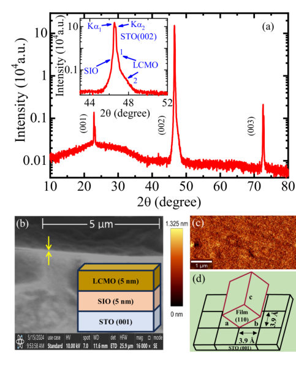
<figcaption class="paper-figure-caption"><b>Fig 1.</b> FIG. 1: (a) The x-ray diffraction (XRD) pattern of the bilayer LCMO/SIO deposited on STO(001) substrate is presented in a semi-log scale. The inset displays the magnified view of the (002) peak showing contributions from both the substrate and film. The (002) substrate peak is split, as contributed by Cu Kα1 and Kα2 radiation. Thickness fringes on the right side due to LCMO are seen, as marked by 1 and 2. (b) shows the FE-SEM side image and the schematic of present bilayer. The arrows in FE-SEM image indicates the thin layer of film on the substrate. (c) shows an atomic force microscopy image of film surface. (d) Schematic diagram of film’s (110) growth is shown with respect to substrate’s (001)...</figcaption>
</figure>
<figure class="paper-figure-card">
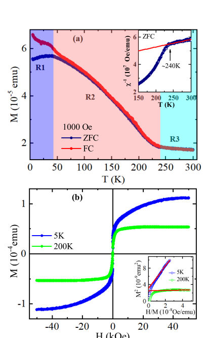
<figcaption class="paper-figure-caption"><b>Fig 2.</b> FIG. 2: (a) Temperature dependent magnetization data for LCMO/SIO BL, collected with 1 kOe applied magnetic field following zero-field cooled (ZFC) and field cooled (FC) proto- cols, are shown. Here, R1, R2 and R3 represent three different temperature regions related to magnetic ordering of LCMO and SIO layer. The inset displays the inverse magnetic suscep- tibility χ−1 against temperature where the red straight line is a guide to the nearly linear high-temperature behavior. (b) Magnetization data as a function of applied magnetic field are shown for present LCMO/SIO BL at 5 and 200 K. The upper inset shows the magnified view of M(H) data across origin while the lower inset shows an Arrott’s plot...</figcaption>
</figure>
<figure class="paper-figure-card">
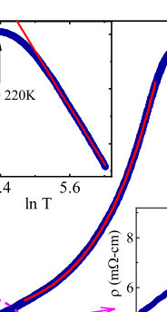
<figcaption class="paper-figure-caption"><b>Fig 3.</b> FIG. 3: Temperature dependent electrical resistivity of present LCMO/SIO BL on STO(001) substrate have been shown. Solid red line indicates the fitting of ρ(T ) data with power-law equation (Eq. 2) in metallic regime. Lower inset magnify the low temperature anomaly in ρ(T ) around 47 K. Upper inset displays the power-law fitting of ρ(T ) with Eq. 3 in high temperature insulating state.</figcaption>
</figure>
<figure class="paper-figure-card">
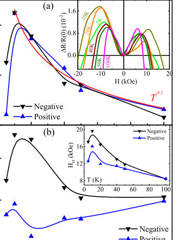
<figcaption class="paper-figure-caption"><b>Fig 4.</b> FIG. 5: Temperature dependent (a) peak field (Hp) and (b) peak MR value (MRp) for positive MR are shown with both positive and negative field scan. The solid red line in (a) indicates a power-law fit of ∝T −0.2. The inset provides a magnified view of MR in low field regime, showing the asym- metric positive MR. The inset in (b) shows the positive to negative MR crossover field Hcr for both negative and posi- tive field cycling.</figcaption>
</figure>
<figure class="paper-figure-card">
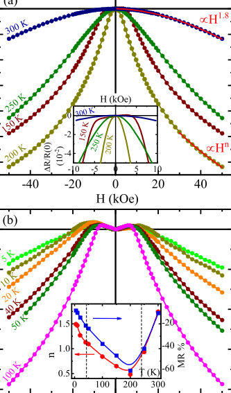
<figcaption class="paper-figure-caption"><b>Fig 5.</b> FIG. 4: Field dependent magnetoresistance (MR) of present LCMO/SIO BL are shown at various temperatures with field scan of ±50 kOe. (a) shows the MR data in (150 - 300) K high temperature range. The MR at 300 K shows a nearly field-quadratic behavior (∝H1.8) throughout the field range (red solid line). Similarly, the red line in high field (30 - 50) kOe for 200 K data represents a power-law fit (ρ(T ) ∝Hn). The inset shows a magnified view of MR data close to zero field. (b) shows the low temperature MR as a function of magnetic field in (100 - 5) K range. The inset demonstrates the temperature dependence of the exponent n (left scale) and the percentage MR (right scale), where the vertical lines...</figcaption>
</figure>
</div>
<p><strong>Summary.</strong> This work reports on the magnetic and magneto-transport properties of a $  ext{LCMO}/  ext{SIO}$ heterostructure. The researchers found that the magnetoresistance exhibits complex, asymmetric behavior linked directly to the magnetic ordering of both the $3d$ and $5d$ layers. This suggests that interfacial spin scattering is a crucial, tunable mechanism for controlling charge transport in these correlated magnetic materials.</p>
<p><strong>Why it may be interesting.</strong> The study explores how interfacial magnetic coupling (via DM interaction and SOC) dictates charge transport properties, which is a key area for understanding correlated electron behavior in engineered quantum materials.</p>
<details>
<summary>Detailed structure</summary>
<p><strong>Main problem.</strong> Investigating the origin and tuning of asymmetric magnetoresistance (MR) in a $3d$-$5d$ magnetic heterostructure.</p>
<p><strong>Main result.</strong> The unusual MR behavior is attributed to interface-driven varying spin scattering between itinerant and localized electrons, demonstrating tunable interfacial magnetic transport.</p>
<p><strong>Method.</strong> The study combines epitaxial thin-film growth (PLD) with comprehensive characterization, including magnetic measurements (SQUID) and electrical transport measurements (four-probe technique).</p>
<p><strong>Model / system.</strong> The system is an epitaxially grown bilayer of a $3d$ ferromagnet, $  ext{La}<em 0.33>{0.67}  ext{Ca}</em>$ substrate. The physics involves the interplay of spin-orbit coupling, magnetism, and interfacial interactions.}  ext{MnO}_3$ (LCMO), and a $5d$ heavy metal, $    ext{SrIrO}_3$ (SIO), on an $    ext{STO</p>
<p><strong>Key observables.</strong> Magnetoresistance (MR), resistivity $
ho(T)$, magnetization $M(H)$, and magnetic ordering temperatures ($    ext{T}_c$ for LCMO, $   ext{T}_p$ for SIO).</p>
<p><strong>Important parameters / regimes.</strong> Temperature (especially near magnetic ordering points), applied magnetic field ($H$), and interfacial coupling strength.</p>
<p><strong>Assumptions / limitations.</strong> The unusual MR behavior is ascribed to interface-driven varying spin scattering between itinerant and localized electrons.</p>
<p><strong>Figures summary.</strong> Figures confirm epitaxial growth (XRD), show smooth film morphology (AFM), detail magnetic transitions in both layers (ZFC/FC, M(H)), and present the temperature and field dependence of the MR.</p>
<p><strong>Paper structure.</strong> The paper follows a standard experimental structure: structural characterization (XRD, AFM, SEM) $ o$ magnetic characterization (SQUID) $  o$ transport measurements ($
ho(T)$, MR) $   o$ interpretation linking MR evolution to the magnetic state of the bilayer.</p>
</details>
<details>
<summary>Abstract</summary>
<p>The complex interplay between spin-orbit coupling, magnetism, and magnetic field at the interface of a heterostructure consisting of ferromagnet (FM) and heavy metal (HM), often exhibit extraordinary magnetic and electric phenomena where an in-plane Dzyaloshinskii-Moriya (DM) interaction plays a crucial role to stabilize local spin texture in FM layer. Here, we report detailed magnetic and magneto-transport behaviour on an epitaxially grown thin heterostructure with 3$d$ FM La$_{0.67}$Ca$_{0.33}$MnO$_3$ (LCMO) and 5$d$ HM SrIrO$_3$ (SIO). Magnetic measurements show an unusual development of magnetic ordering in SrIrO3 around 42 K, which further leads to a Mn/Ir magnetic coupling at the interface. The magnetoresistance (MR) measurements show an evolution of its value and shape with the magnetic state of this bilayer. While MR is negative at high temperature, it shows a positive to negative crossover with stable magnetic ordering of LCMO, and finally the positive MR exhibits an asymmetry at low temperature with the ordering of SIO. While we ascribe this unusual MR behaviour to interface-driven varying spin scattering between itinerant and localized electrons, our results shed a light to comprehend the complex but tunable interface behavior on charge transport in a particularly designed heterostructure, offering valuable insights for future functional material engineering.</p>
</details>
<p><sub><a href="#top">↑ back to top</a></sub></p>

<p><a id="paper-2609.28147"></a></p>
<h3 id="circuit-depth-optimization-of-quantum-partial-search-algorithms"><a href="http://arxiv.org/abs/2609.28147v1">Circuit-depth optimization of quantum partial-search algorithms</a></h3>
<p><strong>Authors:</strong> Yan-Bo Jiang, Xiao-Hui Wang, Kun Zhang, Vladimir Korepin<br>
<strong>Type:</strong> theory · <strong>Category:</strong> quantum information and computing · <strong>PDF:</strong> <a href="https://arxiv.org/pdf/2609.28147v1">https://arxiv.org/pdf/2609.28147v1</a><br>
<strong>Analysis basis:</strong> full PDF text, analyzed in chunks</p>
<div class="figure-strip-hint">↔ Scroll figures horizontally</div>
<div class="paper-figures-scroll">
<figure class="paper-figure-card">
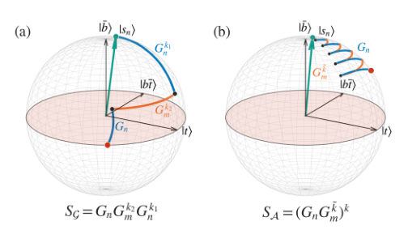
<figcaption class="paper-figure-caption"><b>Fig 1.</b> FIG. 1. Geometric illustration of the two families of partial-search sequences in the three-dimensional invariant subspace. (a) The GRK sequence SG = GnGk2 m Gk1 n follows a global-local-global trajectory. The blue arcs denote global Grover iterations Gk1 n , whereas the or- ange arc denotes the local Grover iterations Gk2 m . (b) The depth- efficient alternating sequence SA = (GnG ˜k m)k repeatedly applies the same local–global pair (orange and blue), producing a spiral tra- jectory. The coordinate axes mark the target item |t⟩, the non-target- in-block state |b¯t⟩, and the non-target-block state |¯b⟩.</figcaption>
</figure>
<figure class="paper-figure-card">
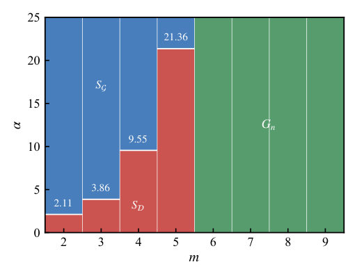
<figcaption class="paper-figure-caption"><b>Fig 2.</b> FIG. 3. Phase diagram of depth-optimal partial-search operators obtained from a numerical scan in α for the discrete block sizes m = 2, . . . , 9 at N = 210. We assume the linear-depth model of diffusion operators with ℓn = n and ℓm = m. Red denotes the non-GRK SD region, blue SG, and green the single global iteration Gn. The annotated crossings are αc = 2.11, 3.86, 9.55, 21.36 for m = 2, 3, 4, 5.</figcaption>
</figure>
<figure class="paper-figure-card">
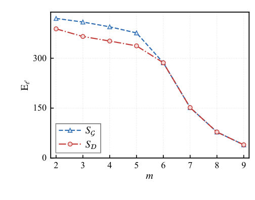
<figcaption class="paper-figure-caption"><b>Fig 3.</b> FIG. 2. Expected circuit depth Eℓas a function of the block-size parameter m for N = 210 and α = 1. We assume the linear-depth model of diffusion operators with ℓn = n and ℓm = m. Circles show the depth-optimal sequences listed in Table II, which have the form SD defined in Eq. (28). Triangles show the optimal expected circuit depth restricted to the GRK sequence given by SG = GnGk2 m Gk1 n .</figcaption>
</figure>
<figure class="paper-figure-card">
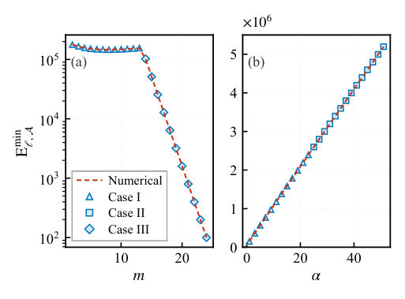
<figcaption class="paper-figure-caption"><b>Fig 4.</b> FIG. 5. Minimum expected circuit depth Emin ℓ,A of the alternating se- quence for N = 225. Panel (a) shows its dependence on m at fixed α = 1 on a logarithmic vertical scale. Panel (b) shows its depen- dence on α at fixed m = 5 on a linear vertical scale. Red dashed lines denote numerical results. Blue triangles, squares, and diamonds de- note the analytical predictions in Cases I, II, and III, given by Corol- laries 5, 7, and Theorem 8, respectively. We use the linear-depth model ℓn = n and ℓm = m.</figcaption>
</figure>
<figure class="paper-figure-card">
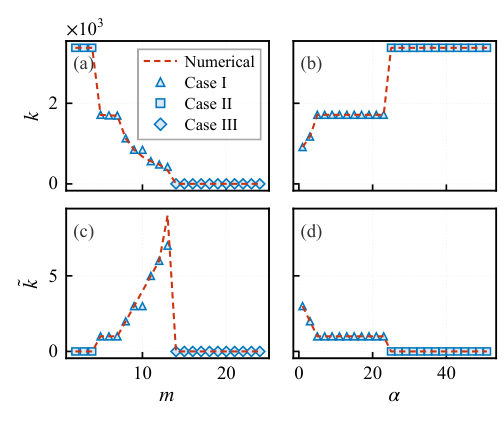
<figcaption class="paper-figure-caption"><b>Fig 5.</b> FIG. 4. Depth-optimal iteration counts for the alternating sequence SA = (GnG ˜k m)k at N = 225. Panels (a) and (b) show the outer iteration count k as functions of m at fixed α = 20 and of α at fixed m = 5, respectively. Panels (c) and (d) show the corresponding inner iteration count ˜k. Red dashed lines denote numerical results. Blue triangles, squares, and diamonds denote the analytical predictions in Cases I, II, and III, given by Theorems 4, 6, and 8, respectively.</figcaption>
</figure>
</div>
<p><strong>Summary.</strong> This paper optimizes the circuit depth for quantum partial-search algorithms by proposing an alternating sequence of global and local Grover operators. By analyzing the expected circuit depth, the authors demonstrate that this new sequence can significantly outperform the established GRK algorithm in depth-constrained scenarios. This advances the practical implementation of quantum search algorithms by providing a depth-optimal alternative.</p>
<p><strong>Why it may be interesting.</strong> This work directly addresses resource optimization in quantum computation, providing concrete, improved circuit implementations for search problems that are crucial for quantum algorithm development.</p>
<details>
<summary>Detailed structure</summary>
<p><strong>Main problem.</strong> The paper aims to optimize the circuit depth of quantum partial-search algorithms, moving beyond the established optimality criteria based solely on the number of oracle queries.</p>
<p><strong>Main result.</strong> An alternating sequence of global and local Grover operators can achieve a significantly lower expected circuit depth (over 20% reduction) compared to the standard Grover-Radhakrishnan-Korepin (GRK) sequence when the oracle and diffusion operator depths are comparable.</p>
<p><strong>Method.</strong> The authors systematically analyze the expected circuit depth, $E_\ell(S)$, for various sequence structures, comparing the depth-optimal alternating sequence ($S_A$) against the query-optimal GRK sequence ($S_G$).</p>
<p><strong>Model / system.</strong> The model is a quantum partial-search algorithm applied to a database of size $N=2^n$, utilizing global ($G_n$) and local ($G_m$) Grover operators. The analysis compares depth-based optimization against query-count optimization.</p>
<p><strong>Key observables.</strong> Expected circuit depth ($E_\ell(S)$), success probability ($   ext{Pr}(S)$), and the ratio of operator depths ($\alpha$).</p>
<p><strong>Important parameters / regimes.</strong> The ratio $\alpha$ between the oracle and global diffusion operator depths, and the block size $b$ relative to the total size $N$.</p>
<p><strong>Assumptions / limitations.</strong> The analysis relies on asymptotic approximations for large $N$ and $K$, and the comparison is made between depth-optimal and query-optimal regimes.</p>
<p><strong>Figures summary.</strong> Figure 1 illustrates the geometric paths of the GRK sequence versus the depth-efficient alternating sequence in the invariant subspace. Figure 3 presents a phase diagram mapping the optimal sequence choice across different depth ratios ($\alpha$).</p>
<p><strong>Paper structure.</strong> The paper reviews the GRK algorithm's query optimality, proposes the depth-efficient alternating sequence ($S_A$), and then systematically analyzes $S_A$ to derive its exact success probability and expected depth, establishing the boundary separating depth-optimal and oracle-optimal regimes.</p>
</details>
<details>
<summary>Abstract</summary>
<p>Grover's algorithm is optimal in terms of oracle queries. We can trade accuracy for speed, which gives rise to the quantum partial-search algorithm. The partial-search algorithm is implemented using two kinds of Grover operators, global and local, where the former is the standard Grover operator for full search and the latter has a diffusion operator acting on the search subspace. The global-local-global sequence, also known as the Grover-Radhakrishnan-Korepin (GRK) algorithm, has been proved optimal in the oracle-query metric. In this work, we show that the alternating sequence of global and local Grover operators, formed by repeatedly applying a fixed product of global and local Grover operators, can achieve a lower expected circuit depth than the GRK algorithm. Through systematic analysis, we obtain its exact success probability, expected depth, and asymptotically optimal parameters. We derive the boundary, characterized by the ratio between the depths of the oracle and the global diffusion operator, separating the depth-optimal and oracle-optimal partial-search algorithms. When the depths of the oracle and the global diffusion operator are comparable, our proposed alternating partial-search sequence can reduce the minimum expected circuit depth by more than 20\% compared with the GRK algorithm.</p>
</details>
<p><sub><a href="#top">↑ back to top</a></sub></p>

<p><a id="paper-2609.26982"></a></p>
<h3 id="complexity-of-nuclear-states-for-48ca"><a href="http://arxiv.org/abs/2609.26982v1">Complexity of Nuclear States for 48Ca</a></h3>
<p><strong>Authors:</strong> L. López-Hernández, D. A. Lara Bustillos, Carlos E. Vargas, V. Velázquez<br>
<strong>Type:</strong> theory · <strong>Category:</strong> statistical mechanics · <strong>PDF:</strong> <a href="https://arxiv.org/pdf/2609.26982v1">https://arxiv.org/pdf/2609.26982v1</a><br>
<strong>Analysis basis:</strong> full PDF text, analyzed in chunks</p>
<div class="figure-strip-hint">↔ Scroll figures horizontally</div>
<div class="paper-figures-scroll">
<figure class="paper-figure-card">
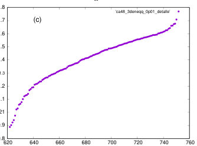
<figcaption class="paper-figure-caption"><b>Fig 1.</b> Figure 1: Energy levels of 48Ca as a function of the interaction parameter χ. The quadrupole two-body interaction in (a) χ = 0.25 is 25 times greater than in (b). In (c), a selected sector of the energy spectrum from (b) is shown.</figcaption>
</figure>
<figure class="paper-figure-card">
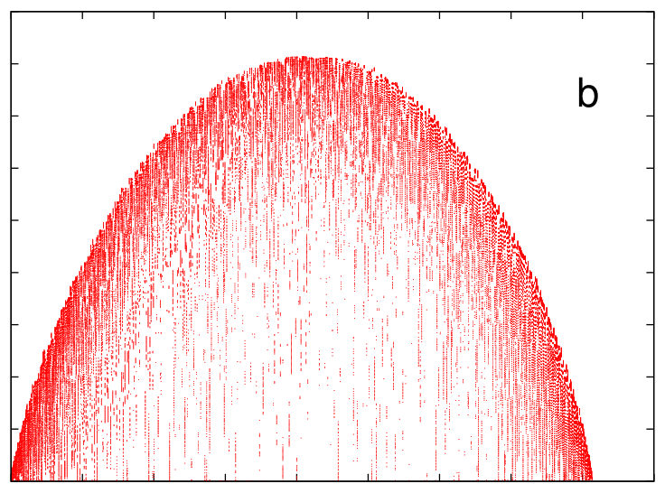
<figcaption class="paper-figure-caption"><b>Fig 2.</b> Figure 2: Distribution of k states for which the probabilities (P α k = |Cα k |2 &gt; 0.05 for each state vector |α⟩on the horizontal axis for the 48Ca nucleus with Jπ = 3+. We use two values of the quadrupole–quadrupole interaction: (a) χ = 0.01 and (b) χ = 0.25. The probability distributions show gaps for weak interactions.</figcaption>
</figure>
<figure class="paper-figure-card">
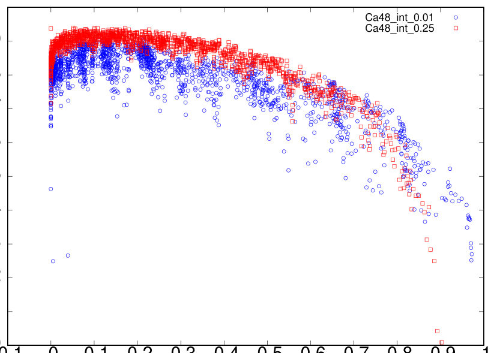
<figcaption class="paper-figure-caption"><b>Fig 3.</b> Figure 3: Shannon entropy as a function of the interaction parameter for χ = 0.01 (blue circles) and χ = 0.25 (red squares). (a) Shannon entropy versus basis state α; (b) Shannon entropy versus disequilibrium D. 7</figcaption>
</figure>
<figure class="paper-figure-card">
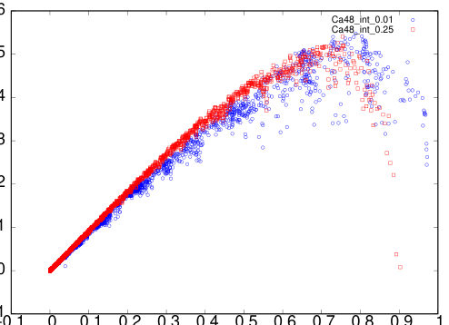
<figcaption class="paper-figure-caption"><b>Fig 4.</b> Figure 4: Complexity as a function of the interaction parameter for χ = 0.01 (blue circles) and χ = 0.25 (red squares). (a) Complexity versus basis state α; (b) Complexity versus disequilibrium D.</figcaption>
</figure>
</div>
<p><strong>Summary.</strong> This theoretical study applies information-theoretic measures, specifically entropy and complexity, to analyze the quantum dynamics of the $^{48}	ext{Ca}$ nucleus. By comparing results obtained under weak (regular) versus strong (chaotic) quadrupole interactions, the authors demonstrate that the system's complexity is sensitive to the degree of internal interaction, providing a diagnostic tool for quantum chaos in nuclear physics.</p>
<p><strong>Why it may be interesting.</strong> This work connects concepts from quantum chaos theory (regular vs. chaotic dynamics) with information theory (entropy/complexity) in a nuclear structure context, providing a quantitative diagnostic tool for understanding complex many-body quantum systems.</p>
<details>
<summary>Detailed structure</summary>
<p><strong>Main problem.</strong> The study investigates the differences in information entropy and complexity measures for many-body quantum systems as they transition between regular and chaotic dynamical regimes.</p>
<p><strong>Main result.</strong> The complexity and entropy of the nuclear states are demonstrably different between the regular and chaotic regimes, indicating that the internal quadrupole interactions significantly influence the system's information structure.</p>
<p><strong>Method.</strong> The authors diagonalize the two-body Hamiltonian for the $^{48}	ext{Ca}$ nucleus to obtain eigenvectors, and then calculate Shannon entropy ($S_\alpha$) and a disequilibrium measure ($D$) to define complexity ($C=S \cdot D$).</p>
<p><strong>Model / system.</strong> The system analyzed is the $^{48}	ext{Ca}$ nucleus, modeled using the shell model Hamiltonian $\hat{H} = \hat{H}_m - \chi \hat{Q} \cdot \hat{Q}$. The analysis compares two regimes: a regular one ($\chi = 0.01$) and a chaotic one ($\chi = 0.25$).</p>
<p><strong>Key observables.</strong> Shannon Entropy ($S_\alpha$), Complexity ($C$), Energy Spectra (Power spectrum $P(f)$), and eigenvector probability distributions ($P_{\alpha k}$).</p>
<p><strong>Important parameters / regimes.</strong> The interaction strength parameter $\chi$, which controls the transition from regular ($\chi=0.01$) to chaotic ($\chi=0.25$) behavior.</p>
<p><strong>Assumptions / limitations.</strong> The analysis assumes the validity of using information-theoretic measures (entropy and complexity) to characterize the underlying quantum dynamics and chaos in the nuclear shell model.</p>
<p><strong>Figures summary.</strong> Figures illustrate the energy levels across different $\chi$ values, the probability distributions of components for both regimes, and plots showing Shannon entropy and Complexity as functions of the basis state ($\alpha$) and the disequilibrium measure ($D$).</p>
<p><strong>Paper structure.</strong> The paper establishes the theoretical framework using complexity measures, applies these measures to the $^{48}	ext{Ca}$ nucleus Hamiltonian across varying interaction strengths ($\chi$), and compares the resulting entropy and complexity values to diagnose the transition from regular to chaotic quantum dynamics.</p>
</details>
<details>
<summary>Abstract</summary>
<p>In complex systems theory, there are different ways to describe a system in terms of information, such as emergence (Shannon entropy), self-organization, and com- plexity. These measures provide information about the dynamic behavior of a complex system. We study the differences in entropy and complexity for many-body systems undergoing a transition from a regular to a chaotic regime. To do this, we analyze the eigenvectors of the 48 Ca nucleus for different quadrupole-type two-body interactions. We obtain the eigenvectors by diagonalizing the two-body Hamiltonian for 48 Ca us- ing the Antoine code. We then calculate the entropy and complexity for the different quadrupole-type interactions. The differences found in information entropy and com- plexity are clear when comparing a regular system with a chaotic one. We find that the complexity of the regular and chaotic states of 48 Ca shows differences associated with its internal interactions.</p>
</details>
<p><sub><a href="#top">↑ back to top</a></sub></p>

<p><a id="paper-2609.28028"></a></p>
<h3 id="cubical-sheaf-complexes-with-constant-expansion-with-applications-to-asymptotically-good-qltcs"><a href="http://arxiv.org/abs/2609.28028v1">Cubical Sheaf Complexes with Constant Expansion with Applications to Asymptotically Good qLTCs</a></h3>
<p><strong>Authors:</strong> Yeyuan Chen, Miryam Mi-Ying Huang, Yinchen Liu, Er-Cheng Tang<br>
<strong>Type:</strong> theory · <strong>Category:</strong> quantum information and computing · <strong>PDF:</strong> <a href="https://arxiv.org/pdf/2609.28028v1">https://arxiv.org/pdf/2609.28028v1</a><br>
<strong>Analysis basis:</strong> full PDF text, analyzed in chunks</p>
<div class="figure-strip-hint">↔ Scroll figures horizontally</div>
<div class="paper-figures-scroll">
<figure class="paper-figure-card">
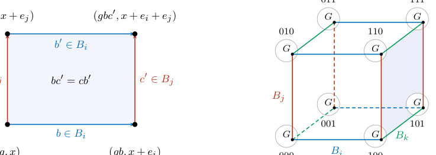
<figcaption class="paper-figure-caption"><b>Fig 1.</b> Figure 1: Edges and cubes in a decorated Cayley cubical complex. In (a), the two paths to the opposite vertex agree by bc′ = cb′. The two blue opposite edges are vertices joined by an edge in the direction-j parallel-face graph. In (b), the three bits record colors in directions (i, j, k); each circle represents a copy of G, and the dots and segments select one cube. The shaded square has type {j, k}.</figcaption>
</figure>
</div>
<p><strong>Summary.</strong> This paper develops a sophisticated mathematical construction for building quantum locally testable codes (qLTCs) with optimal asymptotic parameters. It achieves this by embedding the coding problem within the framework of cubical sheaf complexes defined over arithmetic quotients of trees. The work is significant for providing explicit, polynomial-time methods to construct highly efficient quantum error correction codes.</p>
<p><strong>Why it may be interesting.</strong> While highly abstract, the reliance on complex combinatorial structures (sheaves, complexes) to guarantee robust coding properties is a theoretical advancement that could inspire new ways to analyze error correction in complex quantum systems.</p>
<details>
<summary>Detailed structure</summary>
<p><strong>Main problem.</strong> The primary goal is to construct quantum error correcting codes (qLTCs) that simultaneously achieve constant rate, linear distance, and constant soundness while maintaining bounded local check and qubit degrees.</p>
<p><strong>Main result.</strong> The authors present an explicit, polynomial-time computable family of codes derived from $r$-dimensional cubical sheaf complexes, achieving the desired asymptotic bounds for qLTCs.</p>
<p><strong>Method.</strong> The construction method combines cubical sheaf complexes with a uniform product-expansion theorem applied to Reed-Solomon codes on arithmetic cubical complexes, leveraging the local-to-global framework.</p>
<p><strong>Model / system.</strong> The theoretical model is quantum error correction, specifically focusing on CSS codes derived from the structure of cubical sheaf complexes built upon arithmetic quotients of products of trees.</p>
<p><strong>Key observables.</strong> Code parameters such as rate ($K/N$), minimum distance ($D$), and soundness ($
ho$), which are shown to be bounded away from zero or linear in $N$.</p>
<p><strong>Important parameters / regimes.</strong> The construction is parameterized by fixed integers $r \ge 4$ and $2 \le k \le r-2$.</p>
<p><strong>Assumptions / limitations.</strong> The construction relies on the existence of arithmetic quotients of products of trees and the successful establishment of uniform product expansion for the local Reed-Solomon codes and their duals.</p>
<p><strong>Figures summary.</strong> Figure 1 illustrates the structure of a decorated Cayley cubical complex, detailing how edges and cubes are defined and how opposite edges must agree.</p>
<p><strong>Paper structure.</strong> The paper builds from the general framework of cubical complexes and sheaf theory, applies this to arithmetic quotients of products of trees, establishes the necessary local coding conditions (product expansion), and culminates in the main theorems proving the existence of the desired quantum codes.</p>
</details>
<details>
<summary>Abstract</summary>
<p>For every fixed integers $r \ge 4$ and $2 \le k \le r-2$, we construct $r$-dimensional cubical sheaf complexes whose degree-$k$ CSS codes have positive constant rate, linear distance, and constant soundness, with bounded row and column weights. Taking $r=4$ and $k=2$ gives a family of asymptotically good binary qLTCs.   At the core of our construction is a uniform product-expansion theorem for explicit Reed-Solomon codes on norm-one evaluation sets. The key point is that the expansion constant stays bounded away from zero as the local code lengths grow. We place these codes on arithmetic cubical complexes, obtaining constant local expansion for both the resulting sheaf and its dual. Together with the local-to-global framework of Dinur, Lin, and Vidick (FOCS 2024) and sheaf duality, this gives linear distance and constant soundness, while an asymmetric choice of local code dimensions gives positive rate. The resulting codes are explicit and polynomial-time computable.</p>
</details>
<p><sub><a href="#top">↑ back to top</a></sub></p>

<p><a id="paper-2609.28229"></a></p>
<h3 id="distilling-datasets-into-shallow-circuits-for-quantum-machine-learning"><a href="http://arxiv.org/abs/2609.28229v1">Distilling Datasets into Shallow Circuits for Quantum Machine Learning</a></h3>
<p><strong>Authors:</strong> Guang Lin, Qibin Zhao<br>
<strong>Type:</strong> both · <strong>Category:</strong> quantum information and computing · <strong>PDF:</strong> <a href="https://arxiv.org/pdf/2609.28229v1">https://arxiv.org/pdf/2609.28229v1</a><br>
<strong>Analysis basis:</strong> full PDF text, analyzed in chunks</p>
<div class="figure-strip-hint">↔ Scroll figures horizontally</div>
<div class="paper-figures-scroll">
<figure class="paper-figure-card">
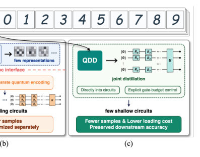
<figcaption class="paper-figure-caption"><b>Fig 1.</b> Figure 1: Three approaches to quantum training data. (a) Per-sample preparation. (b) Hybrid distil- lation with a separate encoding. (c) Quantum dataset distillation (QDD).</figcaption>
</figure>
<figure class="paper-figure-card">
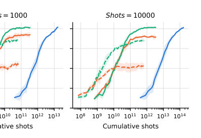
<figcaption class="paper-figure-caption"><b>Fig 2.</b> Figure 2: Finite-shot parameter-shift training on MNIST: test accuracy vs. cumulative shots.</figcaption>
</figure>
</div>
<p><strong>Summary.</strong> This paper introduces Quantum Dataset Distillation (QDD) to solve the high computational cost of training quantum models on large datasets. QDD synthesizes the entire dataset into a small set of shallow, executable quantum circuits. This approach drastically reduces the required quantum shots while maintaining high classification accuracy, making QML more practical for real quantum hardware.</p>
<p><strong>Why it may be interesting.</strong> The work directly addresses the practical resource constraints of running QML algorithms on near-term quantum hardware by creating data representations that are inherently compatible with shallow circuit execution.</p>
<details>
<summary>Detailed structure</summary>
<p><strong>Main problem.</strong> Training quantum machine learning models is computationally expensive because the loading circuit must be re-executed for every data sample at every training step.</p>
<p><strong>Main result.</strong> The proposed Quantum Dataset Distillation (QDD) achieves accuracy comparable to full-data training using only a tiny fraction (e.g., 10 circuits) of the original dataset size.</p>
<p><strong>Method.</strong> QDD directly distills the entire dataset into a small set of shallow, executable quantum circuits by optimizing circuit parameters using a joint objective function that matches both mean features and density matrices.</p>
<p><strong>Model / system.</strong> The system involves Quantum Machine Learning (QML) applied to classical data (like MNIST images), where data states are represented by low-rank tensor network states realized by shallow, parameterized quantum circuits.</p>
<p><strong>Key observables.</strong> Test accuracy on MNIST/Fashion-MNIST, cumulative shot count reduction (up to $100	imes$), and loading circuit cost (number of two-qubit gates).</p>
<p><strong>Important parameters / regimes.</strong> The number of distilled circuits per class (IPC), the loading budget, and the weight $\alpha$ balancing distribution matching vs. density-matrix matching.</p>
<p><strong>Assumptions / limitations.</strong> The key assumption is that the synthetic samples must be parameterized <em>as</em> executable circuits, avoiding the information loss associated with post-hoc state-preparation synthesis.</p>
<p><strong>Figures summary.</strong> Figures illustrate the comparison between different data preparation methods (per-sample vs. QDD) and show performance metrics like shot savings and accuracy vs. sample budget.</p>
<p><strong>Paper structure.</strong> The paper introduces the computational bottleneck, proposes QDD as a solution, details the joint optimization objective (distribution and density matrix matching), presents results on MNIST/Fashion-MNIST showing massive shot savings, and validates the method on real quantum hardware.</p>
</details>
<details>
<summary>Abstract</summary>
<p>In quantum machine learning, training a quantum model requires each sample to be prepared as a quantum state by a loading circuit that must be re-executed for every shot at every training step. The total burden therefore scales with both the number of samples and the cost of preparation. Existing approaches reduce the loading cost of individual inputs or distill data and compress their representations before applying a separate quantum encoding. This separation can leave resulting samples costly to prepare or cause additional loss of the information during subsequent compilation into shallow circuits. We propose quantum dataset distillation (QDD), which distills the full dataset directly into a small set of shallow circuits. Each synthetic sample is parameterized as a staircase circuit corresponding to a low-rank tensor network, making the sample and its loading circuit the same object. The circuit parameters are optimized classically with exact gradients using distribution matching under an explicit loading budget, without post-hoc state-preparation synthesis. On MNIST and Fashion-MNIST, only 10 circuits per class ($0.0017\times$ the full dataset size) achieve accuracy comparable to full-data training and outperform selection baselines under matched sample and loading budgets. In finite-shot training, QDD reaches 95\% of the full-data accuracy with more than $100\times$ fewer cumulative shots. Additionally, we validate QDD on real quantum hardware, demonstrating its practical deployment potential.</p>
</details>
<p><sub><a href="#top">↑ back to top</a></sub></p>

<p><a id="paper-2609.27053"></a></p>
<h3 id="equivalence-of-maximal-and-generic-reachability-for-non-universal-variational-quantum-circuits"><a href="http://arxiv.org/abs/2609.27053v1">Equivalence of maximal and generic reachability for non-universal Variational Quantum Circuits</a></h3>
<p><strong>Authors:</strong> Vishal S. Ngairangbam, Michael Spannowsky<br>
<strong>Type:</strong> theory · <strong>Category:</strong> quantum information and computing · <strong>PDF:</strong> <a href="https://arxiv.org/pdf/2609.27053v1">https://arxiv.org/pdf/2609.27053v1</a><br>
<strong>Analysis basis:</strong> full PDF text, analyzed in chunks</p>
<div class="figure-strip-hint">↔ Scroll figures horizontally</div>
<div class="paper-figures-scroll">
<figure class="paper-figure-card">
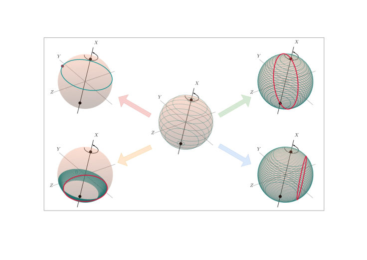
<figcaption class="paper-figure-caption"><b>Fig 1.</b> FIG. 1. Stratification of the sphere S2 under SO(2) rotations about the X axis and its relation to different orientations of the solution manifold M∗. At the top left, M∗is a single point on S2 and the initial point must lie on the exact orbit. When M∗</figcaption>
</figure>
<figure class="paper-figure-card">
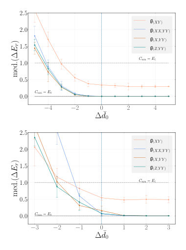
<figcaption class="paper-figure-caption"><b>Fig 2.</b> FIG. 2. Median of the ∆Er and its interquartile range as error bars over ten randomly initialised training runs on a fixed random reference state for n = 5 (top) and n = 7 (bottom) verifying that overparametrisation is necessary for improved convergence where ∆¯d0 = 0 denotes the threshold.</figcaption>
</figure>
</div>
<p><strong>Summary.</strong> This theoretical work rigorously analyzes the limitations of Variational Quantum Circuits (VQCs) by establishing conditions for state reachability on the quantum state manifold. It derives a crucial dimensional criterion stating that the target set must have sufficient topological dimension relative to the circuit's generic orbit. This provides a powerful diagnostic tool for designing trainable and effective quantum algorithms.</p>
<p><strong>Why it may be interesting.</strong> It provides rigorous mathematical guarantees regarding the limitations of current quantum machine learning approaches, specifically diagnosing when VQCs are fundamentally incapable of reaching a target state due to geometric constraints.</p>
<details>
<summary>Detailed structure</summary>
<p><strong>Main problem.</strong> The paper establishes the mathematical conditions for determining the reachability and trainability of non-universal Variational Quantum Circuits (VQCs) on the pure state manifold.</p>
<p><strong>Main result.</strong> It proves the equivalence of maximal and generic reachability and derives a necessary dimensional criterion: the target set's dimension must be at least as large as the co-dimension of the generic orbit for non-zero probability of reachability.</p>
<p><strong>Method.</strong> The analysis employs tools from differential geometry, including the principal orbit-type theorem, the Quantum Fisher Information Matrix (QFIM), and measure theory to analyze the image of the VQC parameter map.</p>
<p><strong>Model / system.</strong> The system involves Variational Quantum Circuits (VQCs) acting on an n-qubit system, whose dynamics are analyzed on the pure state manifold (MN). The focus is on the orbit generated by the VQC parameters from a reference state.</p>
<p><strong>Key observables.</strong> Reachability probability, rank of the QFIM, topological dimension of the solution manifold, and the co-dimension of the generic orbit.</p>
<p><strong>Important parameters / regimes.</strong> The depth of the VQC (finite-depth optimization), the structure of the reference state ($\psi_r$), and the target state ($\psi^*$).</p>
<p><strong>Assumptions / limitations.</strong> Assumes the global minimum of the cost function lies on a smooth subset and that the solution set can be realized via a real analytic map embedding a solution manifold.</p>
<p><strong>Figures summary.</strong> Figure 1 illustrates the stratification of the sphere under SO(2) rotations, showing how generic circular orbits cover the sphere except for fixed antipodal points.</p>
<p><strong>Paper structure.</strong> The paper builds from establishing the equivalence of maximal and generic reachability using the principal orbit-type theorem, deriving necessary and sufficient conditions based on the smoothness of the cost function minimum, and concluding with a dimensional criterion derived from local surjectivity arguments.</p>
</details>
<details>
<summary>Abstract</summary>
<p>Employing problem-specific non-universal Variational Quantum Circuits aligned with a suitable state preparation has become a standard approach to counter the difficulty in training universal ansätze. However, due to their non-universality, diagnosing their reachability and trainability remains reference-state-specific. In this work, we establish the equivalence of maximal reachability and generic reachability over arbitrary reference states as a consequence of the \emph{principal orbit-type theorem}. Thereafter, assuming that the global minimum of the cost function is achieved on a subset that can be described as the image of a smooth function, we derive necessary and sufficient conditions for non-zero probability of reachability under generically sampled reference states. Furthermore, when the solution set is assumed to be realised through a real analytic map that embeds a solution manifold, we show that local surjectivity is generically obtained on the entire solution manifold if it is attained at a single point. As a practical design rule, the need for local surjectivity automatically translates to a necessary dimensional criterion: reachability requires the target set's topological dimension to be at least as large as the co-dimension of the generic orbit. Numerical simulations show that finite-depth optimisation consistently fails when the dimensional obstruction applies, while unobstructed cases show improved convergence.</p>
</details>
<p><sub><a href="#top">↑ back to top</a></sub></p>

<p><a id="paper-2609.28446"></a></p>
<h3 id="field-induced-incipient-spin-density-phase-stabilized-inside-the-nematic-phase-of-fesemath1012mathsmath1013math"><a href="http://arxiv.org/abs/2609.28446v1">Field-induced incipient spin-density phase stabilized inside the nematic phase of FeSe$_{1-x}$S$_x$</a></h3>
<p><strong>Authors:</strong> I. Paulescu, R. M. Abedin, J. S. Pearce, W. H. Fong, Z. Zajicek, A. Morfoot, W. Knafo, O. Squire, D. Graf, A. A. Haghighirad, A. I. Coldea<br>
<strong>Type:</strong> experiment · <strong>Category:</strong> strongly correlated electrons · <strong>PDF:</strong> <a href="https://arxiv.org/pdf/2609.28446v1">https://arxiv.org/pdf/2609.28446v1</a><br>
<strong>Analysis basis:</strong> full PDF text, analyzed in chunks</p>
<div class="figure-strip-hint">↔ Scroll figures horizontally</div>
<div class="paper-figures-scroll">
<figure class="paper-figure-card">
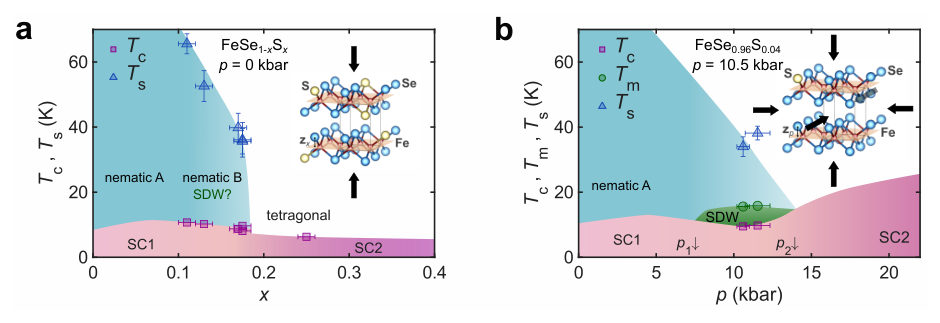
<figcaption class="paper-figure-caption"><b>Fig 1.</b> FIG. 1. Phase diagrams of FeSe1−xSx tuned by chemical and applied pressure. (a) Phase diagram, T −x, as a function of sulfur substitution, x in the absence of magnetic field. Systems investigated in this study, x = 0.11 −0.17(5) (blue triangles) lie close to the border of the nematic electronic phase indicated by Ts which is suppressed close to x ∼0.18. Superconducting regions with different pairing mechanisms, SC1 and SC2, emerge on either side of the nematic endpoint below Tc (pink squares). Schematic boundaries are constructed from refs. [20, 25, 26] and based on data in Supplementary Fig. S1 and Supplementary Fig. S2. (b) Phase diagram of FeSe0.96S0.04 as a function of applied pressure...</figcaption>
</figure>
<figure class="paper-figure-card">
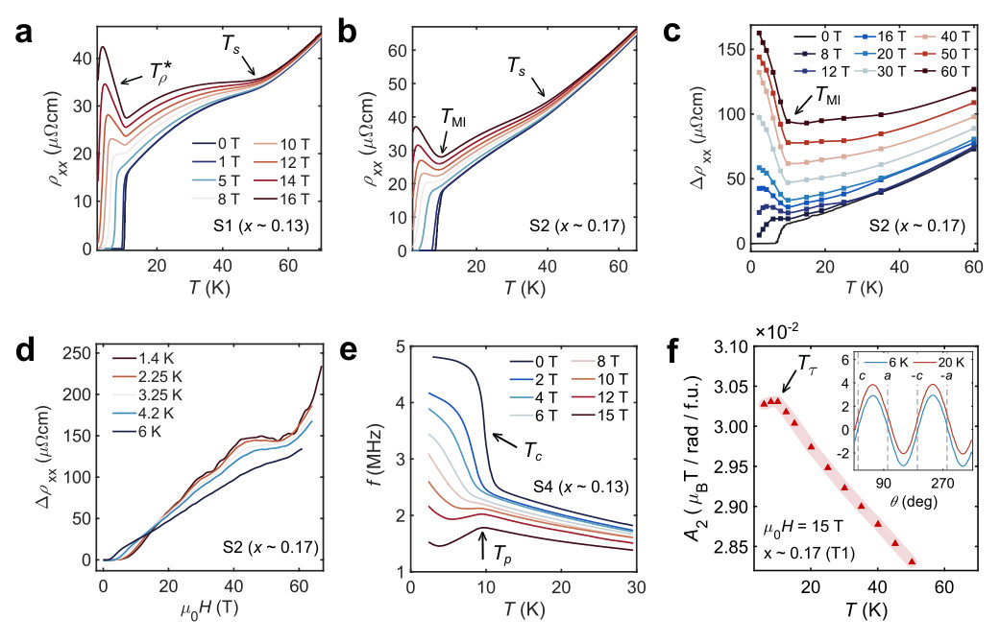
<figcaption class="paper-figure-caption"><b>Fig 2.</b> FIG. 2. Transport and tunnel diode oscillator (TDO) behaviour of nematic FeSe1-xSx (0.13 &lt; x &lt; 0.175) in magnetic field. (a)-(b) Longitudinal resistivity, ρxx, against temperature for two nematic samples S1 and S2 with different compositions, x, in magnetic fields up to 16 T. Ts marks the nematic transition temperature of each sample. The emergence of resistivity upturns at low temperatures is quantified by the metallic-to insulating-like crossover at TMI and additionally by the minimum in first-order derivative at T ∗ ρ (as defined in Supplementary Fig. S5). (c) Resistivity change against temperature in zero field (solid black line) and at fixed magnetic fields (filled squares), as...</figcaption>
</figure>
<figure class="paper-figure-card">
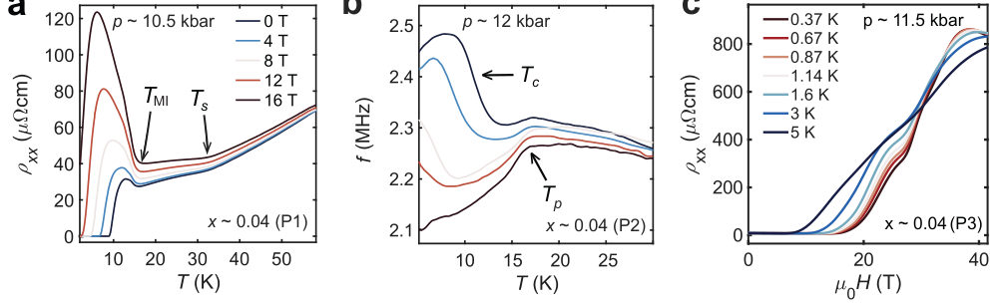
<figcaption class="paper-figure-caption"><b>Fig 3.</b> FIG. 3. Temperature-dependent transport and tunnel diode oscillator (TDO) behaviour of nematic FeSe0.96S0.04 under pressure in different magnetic fields. (a) The longitudinal resistivity ρxx against temperature under pressure of p ∼10.5 kbar for sample P1 in fixed magnetic fields up to 16 T aligned parallel to the c-axis. The arrow at Ts points out the nematic transition and TMI indicates the metallic- insulating-like transition at the development of the SDW phase. (b) The temperature dependence of TDO resonant frequency, f, in different magnetic fields. The arrows indicate the position of the magnetic transition at Tp and the superconducting transition at Tc. (c) The field dependence of...</figcaption>
</figure>
<figure class="paper-figure-card">
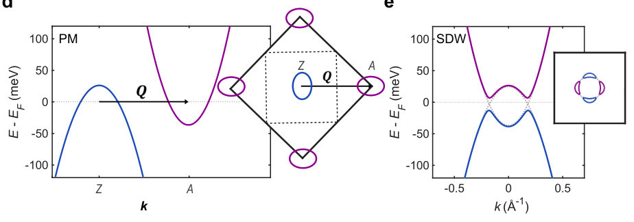
<figcaption class="paper-figure-caption"><b>Fig 4.</b> FIG. 4. Phase diagrams of FeSe1−xSx. (a) Phase diagram, T −x, as a function of sulfur substitution, x, in the presence of magnetic field. Systems investigated in this study, x = 0.11 −0.17(5) (blue triangles) lie close to the border of the nematic electronic phase indicated by Ts, which is suppressed close to x ∼0.18. The pink region represents residual superconductivity in high magnetic fields. The SDW boundaries are constructed based on transport data in 16 T shown in Supplementary Fig. S2 and Supplementary Fig. S3 (solid green squares). Boundary at T ∗reflects the change in resistivity slope in 34 T after Ref. [25] (open green squares). (b) Magnetic field-temperature phase diagram in...</figcaption>
</figure>
</div>
<p><strong>Summary.</strong> This work investigates the complex interplay between SDW order, nematicity, and superconductivity in FeSe1-xS_x. Using high-field magnetotransport and TDO measurements, the authors report finding an incipient SDW phase stabilized within the nematic state. This suggests that tuning or weakening nematicity is key to stabilizing the magnetic order that promotes superconductivity in these materials.</p>
<p><strong>Why it may be interesting.</strong> The interplay between competing electronic orders (SDW, nematicity, SC) in iron-based superconductors is a canonical problem in strongly correlated electron physics, providing experimental insights into pairing mechanisms.</p>
<details>
<summary>Detailed structure</summary>
<p><strong>Main problem.</strong> Investigating the competition and coexistence between Spin-Density Wave (SDW) order and superconductivity (SC) in iron-chalcogenide superconductors, specifically focusing on the role of the nematic electronic state.</p>
<p><strong>Main result.</strong> The study reports evidence for an incipient SDW phase stabilized within the nematic state of FeSe1-xS_x under high magnetic fields, suggesting that weakening nematicity promotes the dominant superconducting pairing mechanism.</p>
<p><strong>Method.</strong> The research employed magnetotransport measurements (resistivity, quantum oscillations), Tunnel Diode Oscillator (TDO) frequency response, and magnetic torque anisotropy measurements.</p>
<p><strong>Model / system.</strong> The physical system is the iron-chalcogenide superconductor FeSe1-xS_x, studied under varying conditions including chemical doping (x), applied hydrostatic pressure, and high magnetic fields (up to 68 T).</p>
<p><strong>Key observables.</strong> Longitudinal resistivity upturns, TDO frequency anomalies, quantum oscillation frequencies (F), and magnetic torque anisotropy.</p>
<p><strong>Important parameters / regimes.</strong> High magnetic fields (up to 68 T), chemical doping concentration (x), and applied pressure (p).</p>
<p><strong>Assumptions / limitations.</strong> The interpretation of resistivity upturns and TDO anomalies as definitive evidence for field-induced electronic order (SDW).</p>
<p><strong>Figures summary.</strong> Figures illustrate phase diagrams showing the field-induced SDW phase in relation to doping and pressure, alongside transport and TDO behavior measurements demonstrating the SDW development.</p>
<p><strong>Paper structure.</strong> The paper systematically analyzes transport and TDO data across different doping levels and pressures, mapping out the phase boundaries where the field-induced SDW order emerges within the nematic superconducting state.</p>
</details>
<details>
<summary>Abstract</summary>
<p>Spin-density wave (SDW) order and superconductivity frequently compete and coexist in unconventional superconductors, where spin fluctuations often mediate superconducting pairing. In iron-chalcogenide superconductors, FeSe$_{1-x}$S$_x$, SDW order has only been detected under applied pressure, while both spin and nematic fluctuations are involved in determining their rich superconducting phase diagrams. Here, we report evidence for an incipient SDW phase, within the nematic state of FeSe$_{1-x}$S$_x$, revealed in magnetic fields up to 68~T. Once superconductivity is quenched, we observe sharp upturns in longitudinal resistivity accompanied by anomalies in tunnel diode oscillator frequency response and torque anisotropy, consistent with a field-induced electronic order. Dominant low-frequency quantum oscillations reveal a small reconstructed Fermi surface, consistent with a field-induced SDW order. Direct experimental comparisons with a pressure-tuned nematic, analogue, FeSe$_{0.96}$S$_{0.04}$, demonstrate that SDW phases are stabilized within the nematic phase of FeSe$_{1-x}$S$_x$ via both chemical substitution and applied pressure. These findings reveal that by weakening nematicity, the SDW orders are stabilised, which promotes the dominant superconducting pairing mechanism in iron chalcogenides.</p>
</details>
<p><sub><a href="#top">↑ back to top</a></sub></p>

<p><a id="paper-2609.28418"></a></p>
<h3 id="intrinsic-anomalous-hall-effect-in-the-surface-conduction-regime-of-non-magnetic-narrow-gap-insulator-fesi"><a href="http://arxiv.org/abs/2609.28418v1">Intrinsic anomalous Hall effect in the surface conduction regime of non-magnetic narrow-gap insulator FeSi</a></h3>
<p><strong>Authors:</strong> Yong-Cheng Pan, Hwai-Chi Lin, Li-Han Wang, Chia-Nung Kuo, Han-Shiuan Lin, Che-Ning Yeh, Chin-Shan Lue, Anne de Visser, Yu-Te Hsu<br>
<strong>Type:</strong> experiment · <strong>Category:</strong> strongly correlated electrons · <strong>PDF:</strong> <a href="https://arxiv.org/pdf/2609.28418v1">https://arxiv.org/pdf/2609.28418v1</a><br>
<strong>Analysis basis:</strong> full PDF text, analyzed in chunks</p>
<div class="figure-strip-hint">↔ Scroll figures horizontally</div>
<div class="paper-figures-scroll">
<figure class="paper-figure-card">
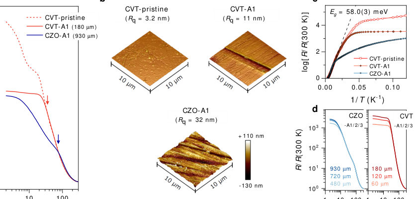
<figcaption class="paper-figure-caption"><b>Fig 1.</b> Figure 1: Transport characteristics of FeSi. (a) Resistance normalized by the room- temperature value R/R(300 K) versus temperature (T) for three representative FeSi sin- gle crystals with distinct surface conditions: a pristine crystal grown by chemical vapor transport (CVT) method (red dashed line), a cut-and-polished CVT crystal of 180-µm thickness (CVT-A1; red solid line), and a crystal grown by the Czochralski (CZO) method of 930-µm thickness cut by spark erosion saw (CZO-A1; blue solid line). Note that the axes are on a double-log scale. (b) Surface topography of the three sample-surface types over a 10 µm × 10 µm area measured by atomic force microscopy. A clear distinction in...</figcaption>
</figure>
<figure class="paper-figure-card">
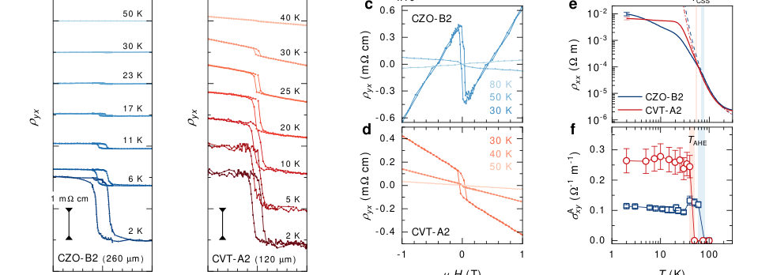
<figcaption class="paper-figure-caption"><b>Fig 2.</b> Figure 2: Anomalous Hall effect in FeSi. (a,b) Hall resistivity ρyx(H) isotherms of (a) a CZO crystal (CZO-B2, 260 µm-thickness) and (b) a CVT crystal (CVT-A2, 120 µm- thickness). For clarity, isotherms are successively shifted by 1 mΩcm, as specified by the vertical arrowed lines. A clear hysteresis in ρyx(H) can be seen between −0.2 and 0.2 T, indicating an anomalous Hall effect (AHE). (c,d) Close-ups of unshifted ρyx(H) shown in (a,b) at T ≥30 K. A clear AHE is seen at 30 K for both samples, which becomes strongly suppressed albeit resolvable at 50 and 40 K for CZO and CVT samples, respectively; at 80 and 50 K, the AHE is no longer present. (e) Temperature-dependent electrical...</figcaption>
</figure>
<figure class="paper-figure-card">
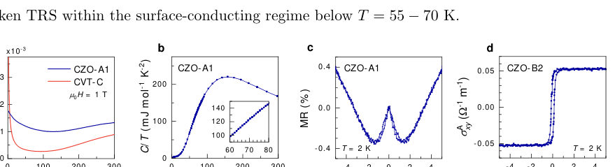
<figcaption class="paper-figure-caption"><b>Fig 3.</b> Figure 3: Evidence for absent magnetic transition and present surface magnetic order. (a) Molar magnetic susceptibility χm(T) measured on CZO-A1 and CVT-C (a sizable pristine crystal with a total mass ≈20 mg from the same batch as the transport CVT samples) at an applied magnetic field of 1 T under field-cooled condition. (b) Heat capacity versus temperature of for CZO-A1 measured in zero magnetic field plotted as C/T(T). Inset shows a close-up between 60 and 80 K. No discernible anomaly is found at T ≃70 K, TAHE of CZO-type crystals. (c) Magnetoresistance (MR) and (d) anomalous Hall conductivity σA xy versus magnetic field measured at 2 K. The complex MR functional form and σA xy(H)...</figcaption>
</figure>
</div>
<p><strong>Summary.</strong> This work reports the discovery of an intrinsic anomalous Hall effect in the surface conduction layer of the non-magnetic insulator FeSi. By correlating the AHE onset with the emergence of surface conducting states, the authors argue for the existence of an emergent, surface-confined magnetic order. This establishes FeSi as a key platform for studying the interplay between strong correlations and anomalous transport phenomena.</p>
<p><strong>Why it may be interesting.</strong> The observation of intrinsic AHE without bulk magnetism provides a clean platform to study emergent magnetic order driven purely by surface electronic structure, which is relevant to understanding topological surface states and symmetry breaking in correlated systems.</p>
<details>
<summary>Detailed structure</summary>
<p><strong>Main problem.</strong> The research investigates the rare phenomenon of observing an intrinsic anomalous Hall effect (AHE) in a material that lacks bulk magnetism, suggesting surface-confined symmetry breaking.</p>
<p><strong>Main result.</strong> The authors report a robust, field-hysteretic intrinsic AHE confined to the surface conduction regime of the non-magnetic insulator FeSi, indicating emergent magnetic order at the surface.</p>
<p><strong>Method.</strong> The study combines systematic single-crystal growth, low-temperature magnetotransport measurements (Hall and longitudinal resistivity), and thermodynamic characterization (susceptibility and specific heat).</p>
<p><strong>Model / system.</strong> The physical system is the non-magnetic narrow-gap insulator FeSi. The focus is on the electronic properties of the surface conduction states (CSS) that emerge at low temperatures.</p>
<p><strong>Key observables.</strong> Anomalous Hall conductivity ($\sigma_{Axy}$), low-temperature electrical conductivity ($\sigma_{xx}$), magnetic susceptibility ($\chi(T)$), and specific heat ($C/T$).</p>
<p><strong>Important parameters / regimes.</strong> Low temperatures ($T_{AHE} \simeq 45-70 	ext{ K}$), surface roughness ($R_q$), and sample thickness.</p>
<p><strong>Assumptions / limitations.</strong> The AHE is intrinsic and surface-driven, confirmed by conductivity scaling, and the bulk material remains non-magnetic despite surface magnetism.</p>
<p><strong>Figures summary.</strong> Figures show normalized resistance vs. T for different sample types, Hall resistivity ($
ho_{xy}$) vs. applied field isotherms demonstrating hysteresis, and $\sigma_{Axy}(T)$ tracking the CSS temperature scale.</p>
<p><strong>Paper structure.</strong> The paper systematically presents evidence for surface conduction states (CSS) via thickness/roughness dependence, followed by the observation of a robust, hysteretic AHE confined to this surface regime, while simultaneously ruling out bulk magnetic origins via thermodynamic measurements.</p>
</details>
<details>
<summary>Abstract</summary>
<p>The realization of an intrinsic anomalous Hall effect (AHE) in the absence of bulk magnetism is a rare phenomenon, requiring a spontaneous breaking of the time-reversal symmetry within the boundary states without a thermodynamic phase transition. Here, we report a robust, zero-field-hysteretic intrinsic AHE confined to the low-temperature surface-conduction regime of the prototypical narrow-gap insulator FeSi. By systematically investigating single crystals grown via Czochralski and chemical vapor transport methods with controlled thicknesses and surface preparations, we demonstrate that low-temperature electrical conductivity correlates with surface roughness and anti-correlates with sample thickness, confirming the emergence of surface conducting states (CSS) below $T_{\rm CSS} \simeq 55-75\text{ K}$. Meanwhile, a robust, field-hysteretic and temperature-independent anomalous Hall conductivity is found below $T_{\rm AHE}\simeq45-70\text{ K}$, implying the presence of magnetic order in the surface conduction regime. Bulk magnetic susceptibility and specific-heat measurements reveal no thermodynamic phase transitions, verifying that the sample interior remains a non-magnetic insulator. Analyses of conductivity scaling and effective three-dimensional conductivity reveal the intrinsic nature of this surface-driven AHE, evidencing the presence of an emergent magnetic order within the metallic surface of a non-magnetic bulk insulator. These findings establish FeSi as a compelling platform to investigate the interplay between strong electron correlations and anomalous Hall transport.</p>
</details>
<p><sub><a href="#top">↑ back to top</a></sub></p>

<p><a id="paper-2609.28351"></a></p>
<h3 id="multipartite-ghz-diagonal-states-and-their-entanglement-properties"><a href="http://arxiv.org/abs/2609.28351v1">Multipartite GHZ diagonal states and their entanglement properties</a></h3>
<p><strong>Authors:</strong> Luka Burduli, Johannes Moerland, Peter Schupp<br>
<strong>Type:</strong> theory · <strong>Category:</strong> quantum information and computing · <strong>PDF:</strong> <a href="https://arxiv.org/pdf/2609.28351v1">https://arxiv.org/pdf/2609.28351v1</a><br>
<strong>Analysis basis:</strong> full PDF text, analyzed in chunks</p>
<div class="figure-strip-hint">↔ Scroll figures horizontally</div>
<div class="paper-figures-scroll">
<figure class="paper-figure-card">
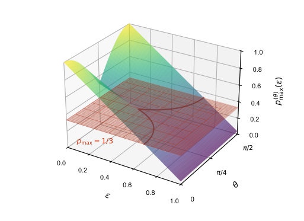
<figcaption class="paper-figure-caption"><b>Fig 1.</b> FIG. 1. For the three-qutrit coherent-superposition family, the depolarized noisy state satisfies p(θ) max(ϵ) = (1−ϵ)cθ +ϵ/27, where cθ = max{cos2 θ, sin2 θ}. The surface is shown over the noise strength ϵ and angle θ; Horizontal plane denotes the GME threshold pmax = 1/3, and its intersection with the surface gives the boundary ϵ = ϵ∗(θ).</figcaption>
</figure>
<figure class="paper-figure-card">
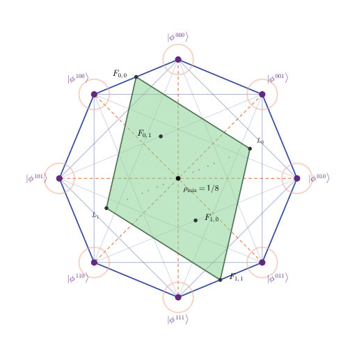
<figcaption class="paper-figure-caption"><b>Fig 2.</b> FIG. 2. Planar shadow of the seven-dimensional GHZ sim- plex ∆7 for N = 3 qubits, with an FS inner shadow. The eight GHZ vertices ϕΛ sit at the vertices vΛ of a regular octagon in bit-complement order, joined by all 8 2  = 28 sim- plex edges. Dashed diagonals connect bit-complement pairs through the centre, where the maximally mixed reference state ρmix = 1/8 sits. Each probability vector is projected linearly as p 7→P</figcaption>
</figure>
</div>
<p><strong>Summary.</strong> This work provides a deep mathematical characterization of entanglement for GHZ diagonal quantum states in multipartite systems. By utilizing the Heisenberg-Weyl decomposition and Fourier analysis, the authors derive multiple necessary and sufficient criteria to distinguish entangled states from fully separable ones within this specific state manifold. This advances the theoretical understanding of multipartite entanglement witnesses.</p>
<p><strong>Why it may be interesting.</strong> The rigorous mathematical characterization of separability boundaries within highly symmetric quantum state manifolds is crucial for designing robust quantum communication protocols and understanding resource theories.</p>
<details>
<summary>Detailed structure</summary>
<p><strong>Main problem.</strong> The paper investigates the entanglement properties and develops necessary and sufficient separability criteria for a specific class of mixed multipartite quantum states called GHZ diagonal states.</p>
<p><strong>Main result.</strong> The authors establish that the set of fully separable states within the GHZ simplex is characterized by the convex hull of depolarized pure product projectors, and they provide multiple criteria (e.g., $\ell_1$ norm, majorization) to detect entanglement.</p>
<p><strong>Method.</strong> The analysis heavily relies on the Heisenberg-Weyl (HW) decomposition, Fourier transforms (DFT), and applying concepts from majorization theory to derive algebraic and geometric separability witnesses.</p>
<p><strong>Model / system.</strong> The system is an $N$-qudit quantum system, restricted to states $
ho$ that are diagonal in a GHZ-type basis, $
ho = \sum_{\Lambda} p_\Lambda |\phi_\Lambda
angle\langle\phi_\Lambda|$.</p>
<p><strong>Key observables.</strong> GHZ probabilities ($p_\Lambda$), the correlation hypermatrix $\mathcal{C}(
ho)$, the $\ell_1$ norm of the flattened correlation tensor ($\Phi_1(f)$), and partial transpose eigenvalues.</p>
<p><strong>Important parameters / regimes.</strong> The number of qudits ($N$), the local dimension ($d$), and the degree of depolarization ($\epsilon$).</p>
<p><strong>Assumptions / limitations.</strong> The analysis is restricted to states diagonal in the GHZ basis, and the derived criteria are necessary but not always sufficient for general separability.</p>
<p><strong>Figures summary.</strong> Figure 2 illustrates the planar shadow of the GHZ simplex for $N=3$ qubits, showing the vertices, the 'FS inner shadow' (green polygon), and the locations of specific test states.</p>
<p><strong>Paper structure.</strong> The paper progresses by first defining the state class and its algebraic structure via the HW decomposition. It then develops multiple criteria (majorization, $\ell_1$ norm) to test for separability. Finally, it characterizes the intersection of the GHZ simplex with the fully separable set using explicit constructions.</p>
</details>
<details>
<summary>Abstract</summary>
<p>In this paper, we investigate the family of GHZ diagonal states, which are mixed multipartite quantum states that are diagonal in a GHZ type basis. We show that the class of GHZ diagonal states is highly symmetric and exhibits rich entanglement properties, making it relevant for applications in multipartite quantum key distribution.</p>
</details>
<p><sub><a href="#top">↑ back to top</a></sub></p>

<p><a id="paper-2609.27141"></a></p>
<h3 id="percolation-in-the-stochastic-block-model"><a href="http://arxiv.org/abs/2609.27141v1">Percolation in the Stochastic Block Model</a></h3>
<p><strong>Authors:</strong> Luca Pieleanu, Moritz Laber, Narayan G. Sabhahit, Dmitri Krioukov<br>
<strong>Type:</strong> theory · <strong>Category:</strong> statistical mechanics · <strong>PDF:</strong> <a href="https://arxiv.org/pdf/2609.27141v1">https://arxiv.org/pdf/2609.27141v1</a><br>
<strong>Analysis basis:</strong> full PDF text, analyzed in chunks</p>
<div class="figure-strip-hint">↔ Scroll figures horizontally</div>
<div class="paper-figures-scroll">
<figure class="paper-figure-card">
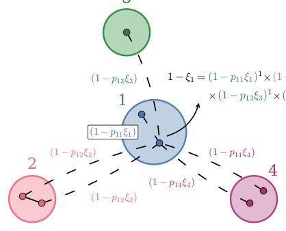
<figcaption class="paper-figure-caption"><b>Fig 1.</b> FIG. 2. Self-consistency equation. A root vertex in community 1 reaches the giant connected component (GCC) through a potential neighbor in community s with probability p1sξs for all s ∈{1, 2, 3, 4}, where ξs is the probability that a vertex in community s belongs to the GCC. Consequently, 1 −p1sξs is the probability that this neighbor does not con- nect the root vertex to the GCC. Assuming these events are asymptotically independent, which is valid when local neigh- borhoods are asymptotically tree-like, multiplying over all po- tential neighbors yields the probability 1 −ξ1 that the root vertex does not belong to the GCC, giving the self-consistency equation (5).</figcaption>
</figure>
<figure class="paper-figure-card">
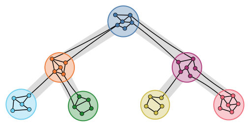
<figcaption class="paper-figure-caption"><b>Fig 2.</b> FIG. 3. Community-scale branching process. Each col- ored disk represents a community after ignoring intercommu- nity edges, with the internal graph containing the connected component of a randomly chosen vertex. If T denotes the size of this component and ¯kout is the expected number of intercommunity edges leaving a single vertex, then a compo- nent generates, on average, T ¯kout outgoing intercommunity edges. Treating these sparse intercommunity connections as a branching process yields the condition E[T]¯kout ≥1 in or- der for the branching process to survive and hence the GCC to form, which remains valid even though the local neighbor- hoods inside communities are not tree-like.</figcaption>
</figure>
<figure class="paper-figure-card">
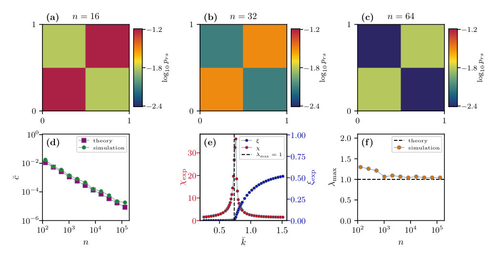
<figcaption class="paper-figure-caption"><b>Fig 3.</b> FIG. 4. SBM with a constant number of blocks. (a)–(c) The connection-probability maps showing two blocks whose relative sizes remain fixed while all connection probabilities decrease as n increases. (d) The average local clustering coefficient ¯c at the experimentally determined critical point, showing both the theoretical prediction from Eq. (3) and the average value measured in simulations. (e) The experimental GCC membership probability ξexp and susceptibility χexp (defined in Sec. III C) as functions of the average degree ¯k; the vertical line marks the value of ¯k corresponding to the spectral threshold λmax = 1. (f) The largest eigenvalue λmax evaluated at the experimentally...</figcaption>
</figure>
<figure class="paper-figure-card">
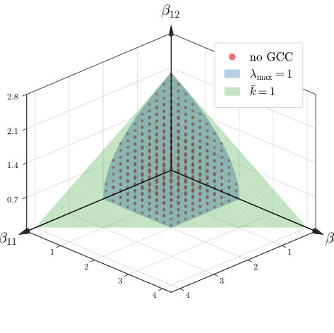
<figcaption class="paper-figure-caption"><b>Fig 4.</b> FIG. 5. Spectral versus average degree percolation conditions in the two-block SBM. The points indicate parameter values for which the self-consistent equations (5) admit only the trivial solution (ξ1, ξ2) = (0, 0), correspond- ing to the absence of a GCC. Parameter values with a GCC are omitted so that the boundary of the no-GCC region re- mains visible. The blue surface shows the spectral threshold λmax = 1, while the green surface shows the average-degree condition ¯k = 1.</figcaption>
</figure>
<figure class="paper-figure-card">
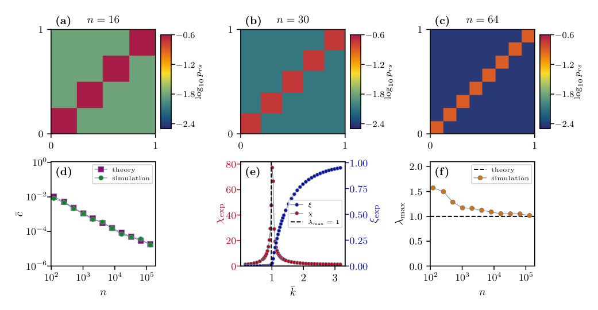
<figcaption class="paper-figure-caption"><b>Fig 5.</b> FIG. 6. SBM with a growing number of blocks. (a)–(c) The connection-probability maps for a sequence with an increasing number of equal-size blocks and stronger intrablock than interblock connectivity. (d) The average local clustering coefficient ¯c evaluated at the experimentally determined critical point. The theoretical prediction from Eq. (3) is compared with the average value measured from simulations, with both tending to zero as n increases. (e) The experimental GCC membership probability ξexp and susceptibility χexp (defined in Sec. III C) as functions of the average degree ¯k; the vertical line indicates the average degree corresponding to the spectral threshold λmax = 1, which...</figcaption>
</figure>
</div>
<p><strong>Summary.</strong> This paper extends percolation theory to the Stochastic Block Model by analyzing scenarios where the underlying community structure evolves with network growth. It develops and applies advanced analytical tools, including self-consistent equations and branching processes, to determine the percolation threshold. The key finding is that the critical threshold deviates from simple expectations due to the dynamic nature of community connections.</p>
<p><strong>Why it may be interesting.</strong> While focused on network theory, the analysis of phase transitions (percolation) in complex, evolving structures shares mathematical techniques with critical phenomena in statistical mechanics, particularly concerning connectivity thresholds.</p>
<details>
<summary>Detailed structure</summary>
<p><strong>Main problem.</strong> The paper investigates the percolation threshold in the Stochastic Block Model (SBM) when the community structure is not fixed but evolves as the network size grows.</p>
<p><strong>Main result.</strong> The critical average degree for percolation is not generally equal to 1, and the transition depends critically on how connections are distributed across the evolving community structure.</p>
<p><strong>Method.</strong> The authors employ two primary analytical methods: linearized self-consistent equations for locally tree-like models and a community-scale branching process for models with persistent clustering.</p>
<p><strong>Model / system.</strong> The system studied is the Stochastic Block Model (SBM), specifically analyzing sequences of SBMs where the number, sizes, and connection probabilities between communities can all change with the network size.</p>
<p><strong>Key observables.</strong> Percolation threshold (emergence of a Giant Connected Component), average degree ($ar{k}$), and average local clustering coefficient ($ar{c}$).</p>
<p><strong>Important parameters / regimes.</strong> The scaling behavior of community sizes and connection probabilities ($ ext{p}_{rs}(n)$) with network size $n$.</p>
<p><strong>Assumptions / limitations.</strong> The analysis distinguishes between regimes: locally tree-like (allowing spectral analysis) versus clustered (requiring branching processes), and notes limitations when intercommunity correlations are strong.</p>
<p><strong>Figures summary.</strong> Figure 1 illustrates connection-probability maps for different SBM sequences showing how connection probabilities vary with size. Figure 2 and 3 illustrate the mathematical frameworks used: the self-consistency equation and the community-scale branching process, respectively.</p>
<p><strong>Paper structure.</strong> The paper develops the theory by first establishing the general framework for evolving SBMs, then applying two distinct analytical tools (self-consistency equations and branching processes) depending on the local structure, and finally comparing these results to highlight the limitations of simpler assumptions.</p>
</details>
<details>
<summary>Abstract</summary>
<p>The stochastic block model is a paradigmatic model of networks with community structure. Yet percolation in the model has been studied primarily in cases with a fixed block structure, even though in real networks, the community structure may evolve as the network grows. Here we study percolation in sequences of stochastic block models in which the numbers and sizes of communities, as well as the intra- and intercommunity connection probabilities may all change with the network size. We analyze five such sequences using two methods: linearized self-consistent equations for the locally tree-like models and a branching process at the community scale for the models with nonvanishing clustering. We find that the critical average degree is not generally equal to $1$, even in locally tree-like sequences, because the transition depends on how connections are distributed across the evolving community structure. We also show that the community-scale branching process accurately predicts the transition when intercommunity connections are sufficiently sparse, even in the presence of nonvanishing clustering, while a geometric stochastic block model sequence demonstrates the limitations of this method when correlations between intercommunity connections cannot be neglected. These results extend percolation studies in the stochastic block model to more realistic scenarios with evolving community structure, and may provide new methods to derive the upper and lower bounds for the percolation threshold in geometric long-range percolation.</p>
</details>
<p><sub><a href="#top">↑ back to top</a></sub></p>

<p><a id="paper-2609.28461"></a></p>
<h3 id="purely-logarithmic-time-and-constant-space-overhead-fault-tolerant-quantum-computation"><a href="http://arxiv.org/abs/2609.28461v1">Purely-logarithmic-time- and constant-space-overhead fault-tolerant quantum computation</a></h3>
<p><strong>Authors:</strong> Zhengyi Han, Zi-Wen Liu<br>
<strong>Type:</strong> theory · <strong>Category:</strong> quantum information and computing · <strong>PDF:</strong> <a href="https://arxiv.org/pdf/2609.28461v1">https://arxiv.org/pdf/2609.28461v1</a><br>
<strong>Analysis basis:</strong> full PDF text, analyzed in chunks</p>
<div class="figure-strip-hint">↔ Scroll figures horizontally</div>
<div class="paper-figures-scroll">
<figure class="paper-figure-card">
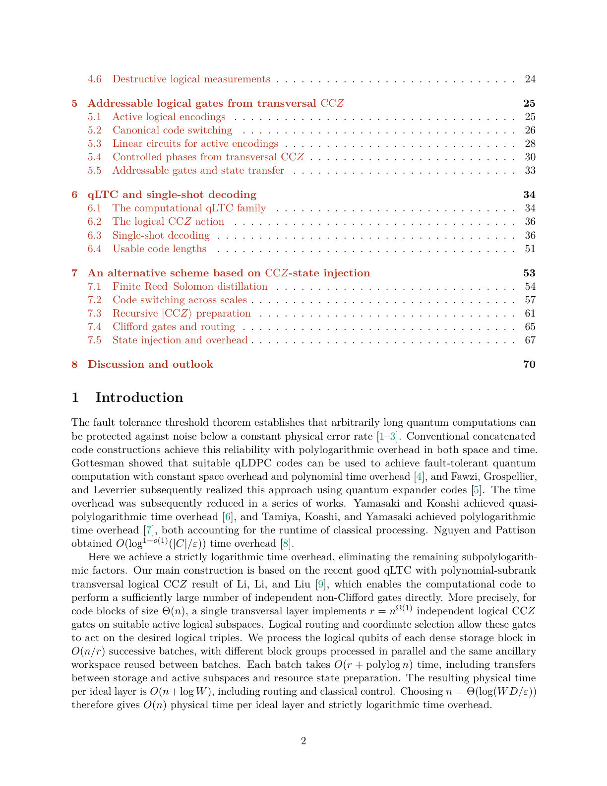
<figcaption class="paper-figure-caption"><b>Fig 1.</b> Low-resolution page preview, page 2</figcaption>
</figure>
<figure class="paper-figure-card">
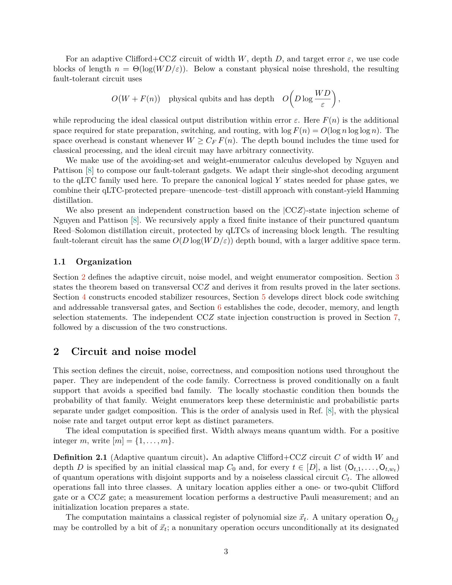
<figcaption class="paper-figure-caption"><b>Fig 2.</b> Low-resolution page preview, page 3</figcaption>
</figure>
<figure class="paper-figure-card">
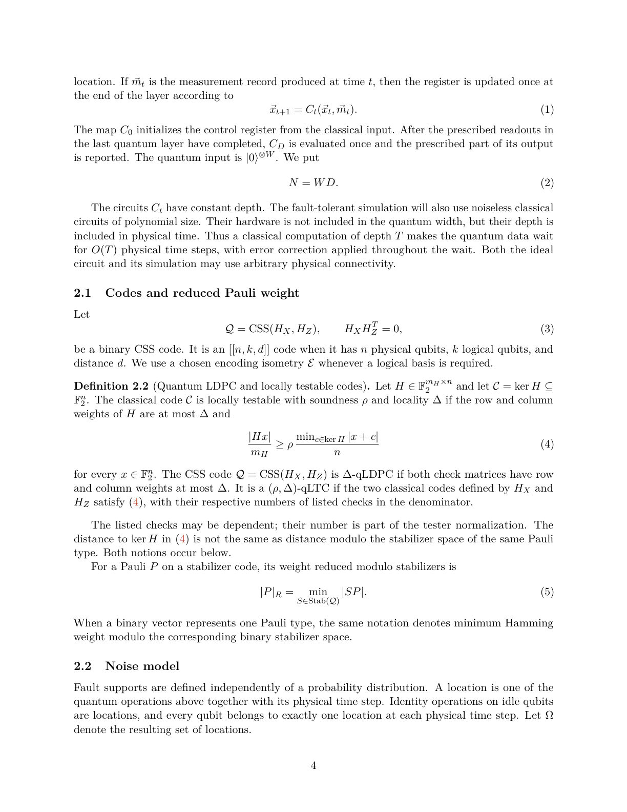
<figcaption class="paper-figure-caption"><b>Fig 3.</b> Low-resolution page preview, page 4</figcaption>
</figure>
<figure class="paper-figure-card">
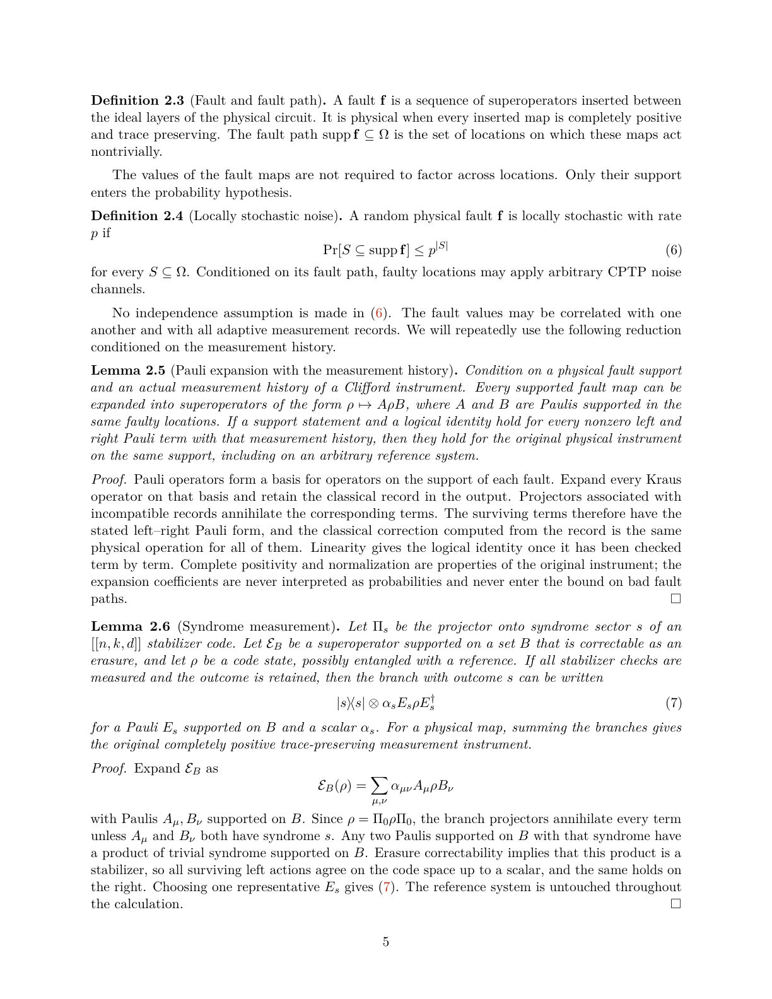
<figcaption class="paper-figure-caption"><b>Fig 4.</b> Low-resolution page preview, page 5</figcaption>
</figure>
<figure class="paper-figure-card">
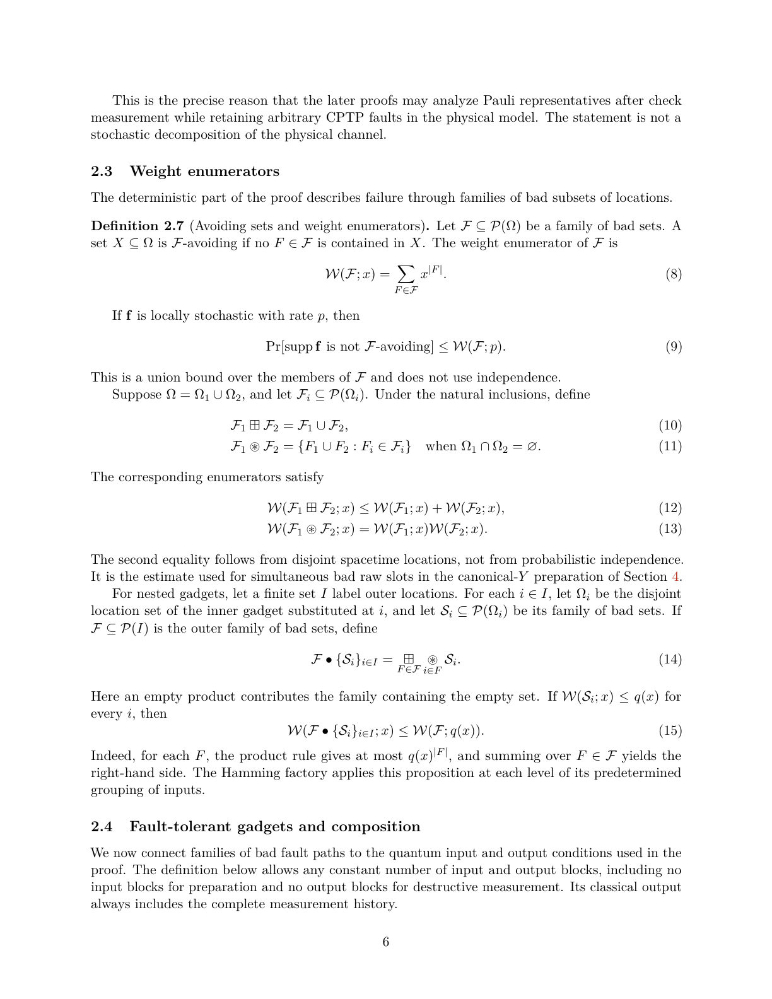
<figcaption class="paper-figure-caption"><b>Fig 5.</b> Low-resolution page preview, page 6</figcaption>
</figure>
</div>
<p><strong>Summary.</strong> This paper presents a significant theoretical advancement in fault-tolerant quantum computation, proving that universal computation can be achieved with purely logarithmic time overhead and constant space overhead. The authors achieve this using advanced techniques involving transversal logical gates on locally testable codes. This result significantly improves upon previous state-of-the-art bounds for building scalable quantum computers.</p>
<p><strong>Why it may be interesting.</strong> This work provides concrete, optimized theoretical bounds on the resource overheads (time/space) for universal quantum computation, which is foundational knowledge for designing practical quantum hardware architectures.</p>
<details>
<summary>Detailed structure</summary>
<p><strong>Main problem.</strong> The paper aims to achieve fault-tolerant quantum computation with the optimal overheads of purely logarithmic time and constant space overhead.</p>
<p><strong>Main result.</strong> It proves that such computation is possible using transversal logical CCZ gates on good quantum locally testable codes, achieving a strictly logarithmic time overhead.</p>
<p><strong>Method.</strong> The construction involves transferring logical qubits between dense storage and active subspaces while reusing ancillary workspace, or alternatively, modifying quantum Reed-Solomon magic-state distillation.</p>
<p><strong>Model / system.</strong> The model is an adaptive Clifford+CCZ quantum circuit operating under a fault-tolerance framework using CSS codes, specifically $\Delta$-qLDPC and $(
ho, \Delta)$-qLTCs.</p>
<p><strong>Key observables.</strong> The primary observables are the time and space overheads required to simulate the ideal logical gate operations.</p>
<p><strong>Important parameters / regimes.</strong> Key parameters include the target error $\epsilon$, the circuit width $W$, and the circuit depth $D$. The time overhead is $O(D \log(WD/\epsilon))$ and the space overhead is constant.</p>
<p><strong>Assumptions / limitations.</strong> The proof relies on the fault path avoiding specific 'bad' families of errors, and the analysis is conditional on the existence of certain positive constants.</p>
<p><strong>Paper structure.</strong> The paper develops a rigorous framework by first establishing fault-tolerance using weight enumerators to constrain bad fault paths, then details the main construction using transversal CCZ gates for state transfer, and finally presents an alternative scheme via recursive distillation.</p>
</details>
<details>
<summary>Abstract</summary>
<p>We prove that constant-space-overhead fault-tolerant quantum computation can be achieved with provably strictly logarithmic time overhead, improving over the best known results with additional subpolylogarithmic factors. Our main construction uses polynomial-subrank transversal logical $\CCZ$ gates on good quantum locally testable codes to implement addressable universal computation by transferring batches of logical qubits between dense storage and active logical subspaces while reusing the same ancillary workspace. Logical $\CCZ$ gates are implemented directly by the transversal operation, so only stabilizer resource states require separate preparation. Furthermore, we give an alternative construction that also achieves purely logarithmic time overhead based on modifying the quantum Reed--Solomon magic-state distillation scheme of Nguyen and Pattison. Recursively applying a fixed distillation circuit protected by qLTCs of increasing block length eliminates the subpolylogarithmic time factor.</p>
</details>
<p><sub><a href="#top">↑ back to top</a></sub></p>

<p><a id="paper-2609.28058"></a></p>
<h3 id="quantum-advantage-in-topological-data-analysis-via-mayer-homology"><a href="http://arxiv.org/abs/2609.28058v1">Quantum Advantage in Topological Data Analysis via Mayer Homology</a></h3>
<p><strong>Authors:</strong> Nhat A. Nghiem, Ryan Babbush, Adam Zalcman, Dominic W. Berry, Trung V. Phan, Guo-Wei Wei, Ryu Hayakawa<br>
<strong>Type:</strong> theory · <strong>Category:</strong> quantum information and computing · <strong>PDF:</strong> <a href="https://arxiv.org/pdf/2609.28058v1">https://arxiv.org/pdf/2609.28058v1</a><br>
<strong>Analysis basis:</strong> full PDF text, analyzed in chunks</p>
<div class="figure-strip-hint">↔ Scroll figures horizontally</div>
<div class="paper-figures-scroll">
<figure class="paper-figure-card">
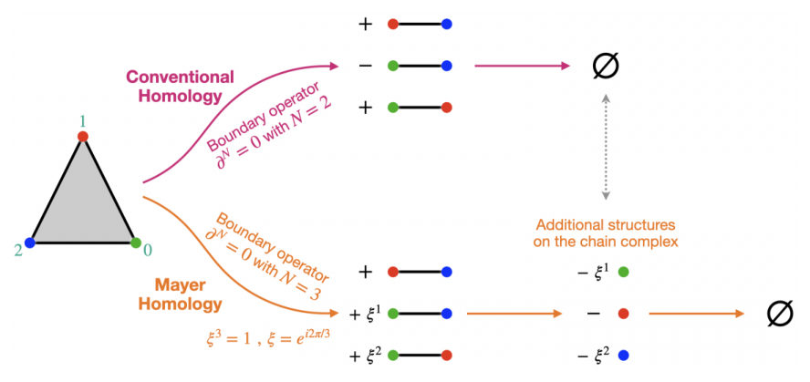
<figcaption class="paper-figure-caption"><b>Fig 1.</b> FIG. 1. The difference between Conventional Homology and Mayer Homology. In Mayer homology, the chain complex – specifically, the boundary sequence – can retain deeper lower-dimensional incidence structure through successive boundary operations. Here, we consider N = 2 (conventional homology) and N = 3 (the simplest nontrivial Mayer homology).</figcaption>
</figure>
<figure class="paper-figure-card">
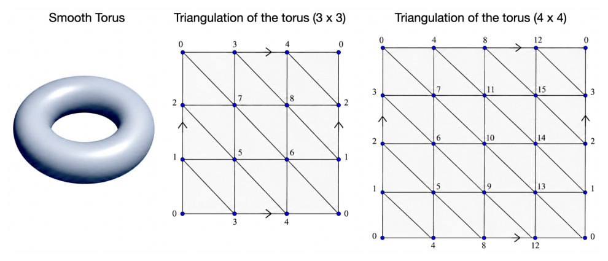
<figcaption class="paper-figure-caption"><b>Fig 2.</b> FIG. 2. A torus and its triangulations. The 3 × 3 triangulation has number of vertices, edges and triangles to be |S0| = 9, |S1| = 27, |S2| = 18. The 4 × 4 triangulation has number of vertices, edges and triangles to be |S0| = 16, |S1| = 48, |S2| = 32.</figcaption>
</figure>
<figure class="paper-figure-card">
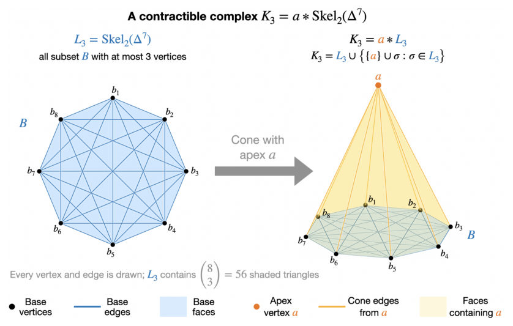
<figcaption class="paper-figure-caption"><b>Fig 3.</b> FIG. 3. Illustration for an example of the cone-complex K = a ∗Skelm−1(∆3m−2), in which we choose m = 3.</figcaption>
</figure>
<figure class="paper-figure-card">
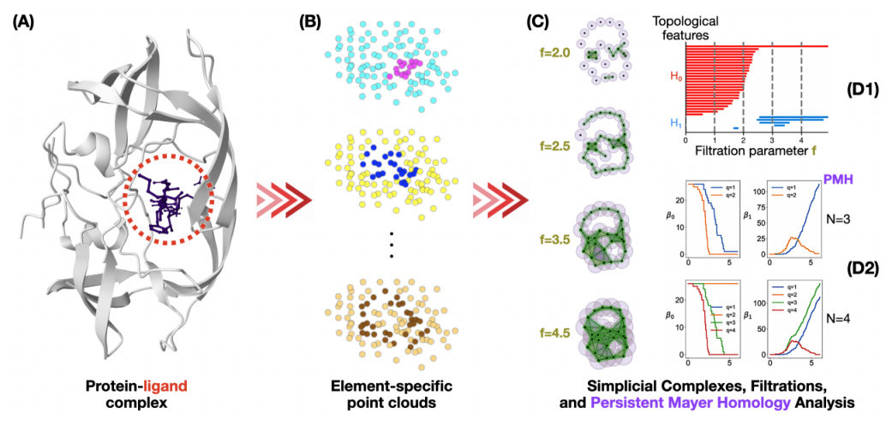
<figcaption class="paper-figure-caption"><b>Fig 4.</b> FIG. 4. Mayer Homology Analysis Pipeline for Protein–Ligand Complexes. (A) A protein-ligand complex (RCSB PDB 1A94, rendered with Mol*). (B) Point clouds constructed directly from the physical positions of the atoms that make up the protein and ligand. (C) Simplicial complexes built from either Euclidean distances or a correlation matrix at different values of the filtration parameter f. (D1) The persistent barcode plot. (D2) Characterization of persistent Mayer homology (PMH) at homological degrees N = 3 and N = 4. Images adapted from [23].</figcaption>
</figure>
<figure class="paper-figure-card">
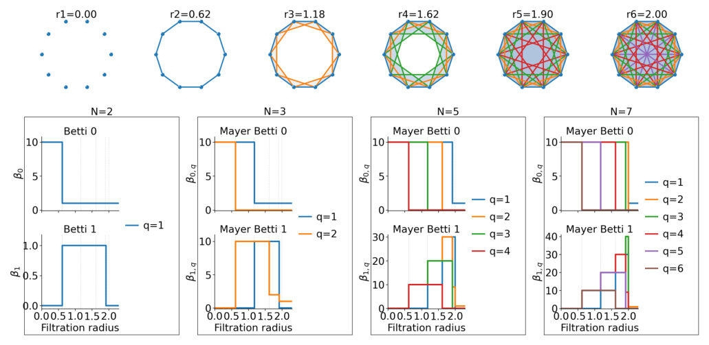
<figcaption class="paper-figure-caption"><b>Fig 5.</b> FIG. 5. Comparison persistent homology (N = 2) and persistent Mayer homology (N = 3, 5, 7) Betti barcodes. For the Betti-0 barcodes, classical persistent homology (N = 2) is insensitive to all geometric connectivity changes except the one occurring at r2. In contrast, persistent Mayer homology with N = 7 captures every geometric connectivity change. For the Betti-1 barcodes, classical persistent homology (N = 2) fails to detect the geometric connectivity changes occurring at r3, r4, and r6. By comparison, persistent Mayer homology at N = 5, 7 successfully resolves all of these geometric changes. Image courtesy of Caleb Khaemba.</figcaption>
</figure>
</div>
<p><strong>Summary.</strong> This paper proposes using Mayer homology to achieve a quantum advantage in Topological Data Analysis (TDA) by developing efficient quantum algorithms. By analyzing Mayer Betti numbers, the authors circumvent limitations found in conventional TDA methods. The work provides theoretical resource estimates and discusses potential real-world applications across various scientific domains.</p>
<p><strong>Why it may be interesting.</strong> The paper develops novel quantum algorithms for calculating topological invariants, which is a complex area of quantum computation that bridges quantum information theory with advanced mathematics.</p>
<details>
<summary>Detailed structure</summary>
<p><strong>Main problem.</strong> The authors address the limited prospect of achieving quantum advantage in conventional Topological Data Analysis (TDA) due to the difficulty in estimating small Betti numbers.</p>
<p><strong>Main result.</strong> They develop quantum algorithms for Mayer homology, proving that Mayer Betti numbers are often exponentially large in the dense regime, thereby overcoming the normalization bottleneck of conventional quantum TDA.</p>
<p><strong>Method.</strong> The work involves developing quantum algorithms for Mayer homology, which generalizes simplicial homology using $N$-nilpotent boundary operators, and deriving resource estimates for quantum computation.</p>
<p><strong>Model / system.</strong> The model is Topological Data Analysis (TDA) applied to simplicial complexes, utilizing the mathematical framework of Mayer homology, which involves roots of unity and iterated boundary operators.</p>
<p><strong>Key observables.</strong> Mayer Betti numbers ($eta_{d,p}$), minimum singular value of the boundary operator ($\sigma_{\min}$), and the Mayer Laplacian eigenvalue ($\gamma_{d,p}$).</p>
<p><strong>Important parameters / regimes.</strong> The quantum resource estimate suggests a few hundred qubits and sixty million Toffoli gates are sufficient for quantum advantage.</p>
<p><strong>Assumptions / limitations.</strong> The analysis assumes the applicability of quantum algorithms to Mayer homology and notes that Mayer Betti numbers are not true topological invariants, depending on triangulation.</p>
<p><strong>Figures summary.</strong> Figures illustrate the difference between conventional and Mayer homology (e.g., for a torus) and show the number of simplices for different dimensions.</p>
<p><strong>Paper structure.</strong> The paper reviews homology theory (simplicial vs. Mayer), introduces the quantum algorithms for Mayer Betti numbers, details the quantum complexity analysis, discusses classical benchmarks, and concludes with real-world applications in genomics and neuroscience.</p>
</details>
<details>
<summary>Abstract</summary>
<p>Prior work has explored quantum algorithms for topological data analysis (TDA), revealing the possibility of exponential quantum speedups in estimating the ratios of Betti numbers to the dimension of the combinatorial Laplacian. However, this quantity is only non-vanishing and efficient-to-quantumly-estimate when Betti numbers are exponentially large, a case for which concrete examples are rarely known. Furthermore, certain randomized classical algorithms are sometimes efficient in this regime. Thus, the prospect of achieving quantum advantage in conventional TDA appears fairly narrow. Here, we address these challenges to the quantum advantage in TDA by developing quantum algorithms for Mayer homology, which generalize simplicial homology to $N$-nilpotent boundary operators ($\partial^N =0$) and have recently been successfully applied to real-world TDA contexts. We introduce an efficient quantum algorithm for estimating Mayer Betti numbers and their persistent counterparts. We then prove that for high-order simplices, Mayer Betti numbers are often exponentially large in the dense regime, which ameliorates the normalization bottleneck of conventional quantum TDA. In the same regime, we argue that existing dequantization algorithms developed for conventional TDA, when applied to Mayer homology, generally lose theoretical guaranties, facing certain structural barriers that prevent their practical utilities. We also provide logical resource estimates revealing that a quantum computer with roughly a few hundred qubits and sixty million Toffoli gates could solve Mayer homology problems beyond the capabilities of known classical approaches. Finally, we discuss real-world applications of Mayer homology in genomics, supersymmetry, drug discovery, and neuroscience, revealing the potential of our quantum algorithm to deliver real-world impacts via Mayer homology.</p>
</details>
<p><sub><a href="#top">↑ back to top</a></sub></p>

<p><a id="paper-2609.27196"></a></p>
<h3 id="quantum-channel-steins-lemma-with-an-exponential-strong-converse"><a href="http://arxiv.org/abs/2609.27196v1">Quantum Channel Stein's Lemma with an Exponential Strong Converse</a></h3>
<p><strong>Authors:</strong> Minbo Gao, Zhengfeng Ji, Chenghua Liu<br>
<strong>Type:</strong> theory · <strong>Category:</strong> quantum information and computing · <strong>PDF:</strong> <a href="https://arxiv.org/pdf/2609.27196v1">https://arxiv.org/pdf/2609.27196v1</a><br>
<strong>Analysis basis:</strong> full PDF text, analyzed in chunks</p>
<div class="figure-strip-hint">↔ Scroll figures horizontally</div>
<div class="paper-figures-scroll">
<figure class="paper-figure-card">
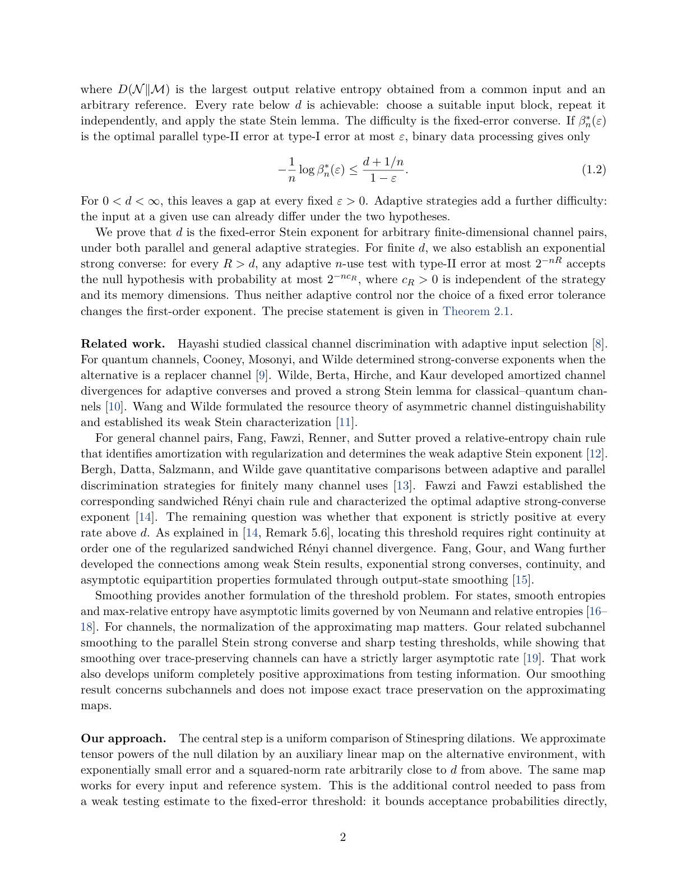
<figcaption class="paper-figure-caption"><b>Fig 1.</b> Low-resolution page preview, page 2</figcaption>
</figure>
<figure class="paper-figure-card">
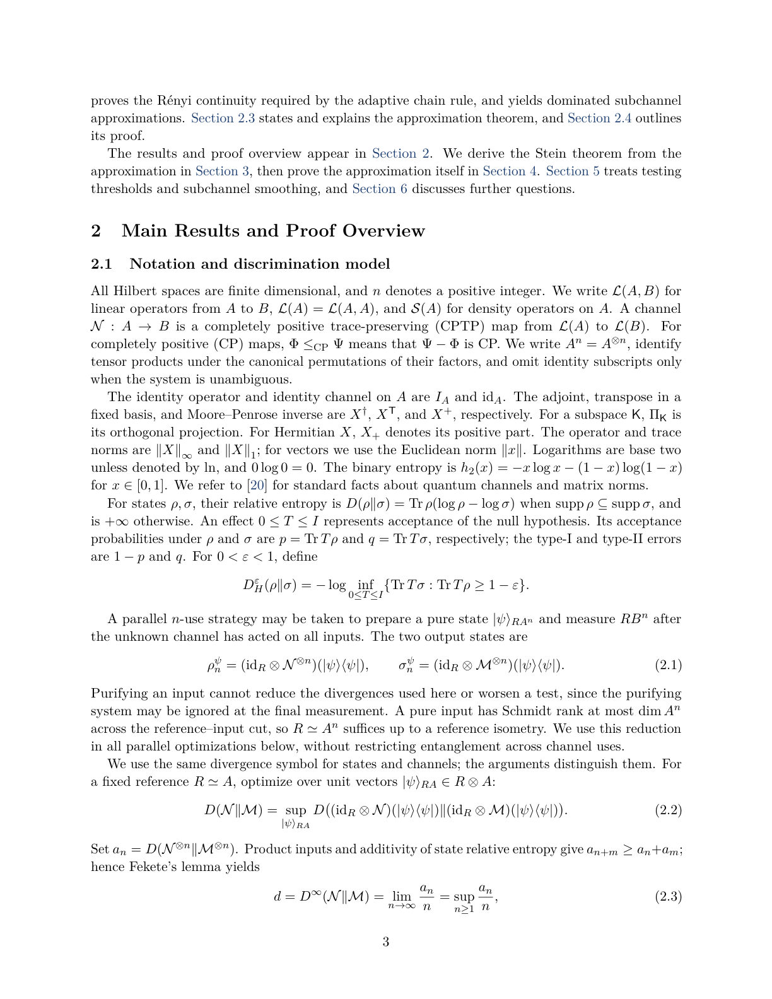
<figcaption class="paper-figure-caption"><b>Fig 2.</b> Low-resolution page preview, page 3</figcaption>
</figure>
<figure class="paper-figure-card">
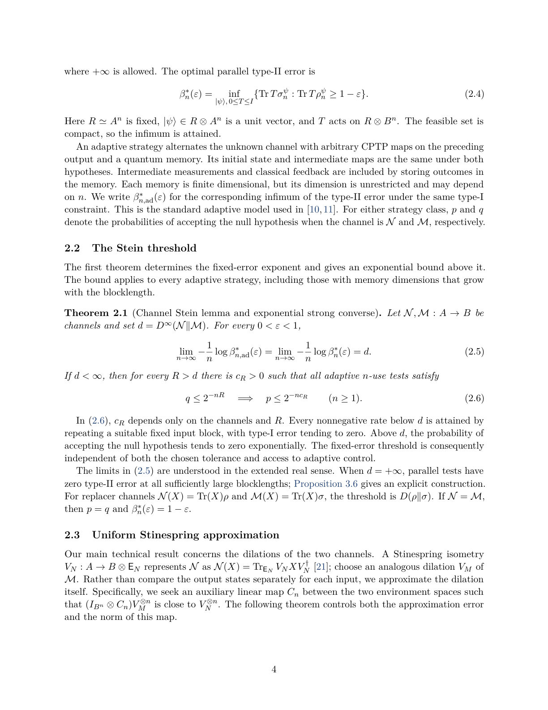
<figcaption class="paper-figure-caption"><b>Fig 3.</b> Low-resolution page preview, page 4</figcaption>
</figure>
<figure class="paper-figure-card">
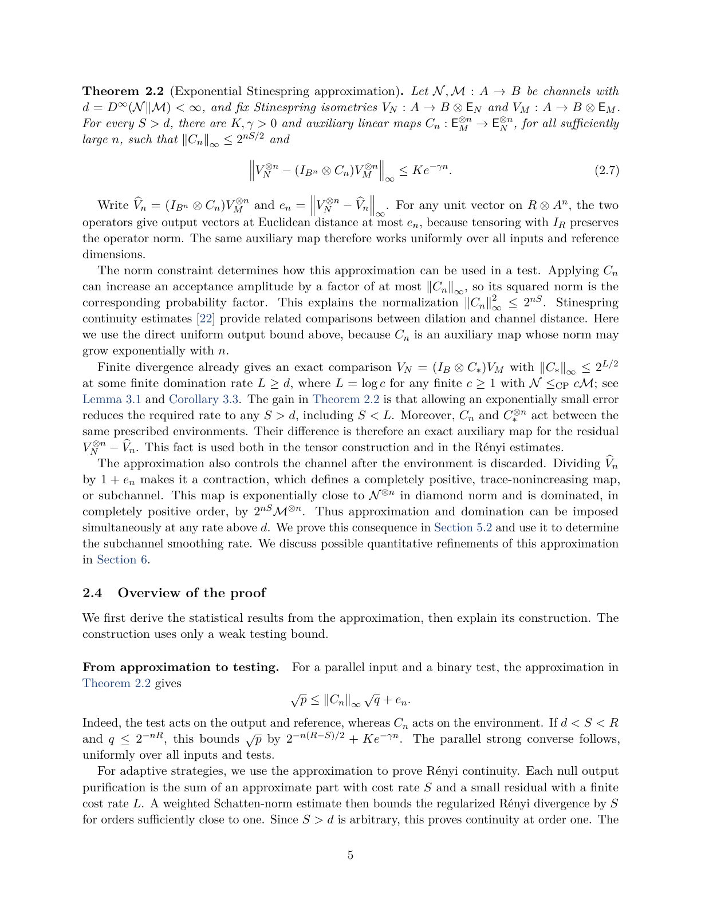
<figcaption class="paper-figure-caption"><b>Fig 4.</b> Low-resolution page preview, page 5</figcaption>
</figure>
<figure class="paper-figure-card">
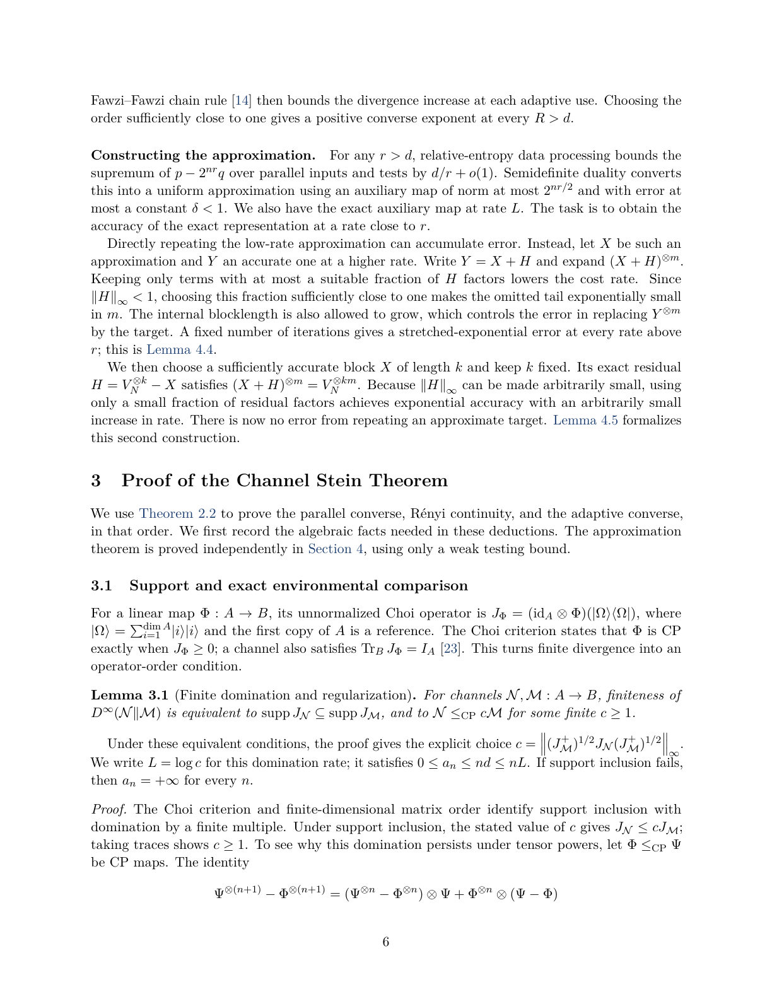
<figcaption class="paper-figure-caption"><b>Fig 5.</b> Low-resolution page preview, page 6</figcaption>
</figure>
</div>
<p><strong>Summary.</strong> This theoretical paper establishes the quantum channel Stein's lemma, proving that the optimal error exponent for distinguishing two quantum channels equals the regularized channel relative entropy. It achieves this by developing a powerful uniform Stinespring approximation technique. The result provides a rigorous, exponentially strong converse for quantum hypothesis testing, crucial for understanding quantum channel capacity limits.</p>
<p><strong>Why it may be interesting.</strong> It provides fundamental, quantitative bounds on the distinguishability of quantum processes, which underpins the theory of quantum communication capacity and hypothesis testing.</p>
<details>
<summary>Detailed structure</summary>
<p><strong>Main problem.</strong> The paper establishes the quantum channel Stein's lemma and proves an exponential strong converse for distinguishing between two unknown quantum channels, N and M.</p>
<p><strong>Main result.</strong> The optimal type-II error exponent is shown to equal the regularized channel relative entropy, and the strong converse dictates that any rate exceeding this divergence forces the acceptance probability to decay exponentially.</p>
<p><strong>Method.</strong> The proof relies on a uniform Stinespring approximation technique, comparing tensor powers of the null and alternative channel dilations, and utilizing iterative rate reduction from weak testing bounds.</p>
<p><strong>Model / system.</strong> The system involves comparing two finite-dimensional quantum channels, N and M, acting on a quantum state space. The analysis is performed over multiple uses (tensor powers) of these channels.</p>
<p><strong>Key observables.</strong> The regularized channel relative entropy, $D_\infty(N\|M)$, and the error probabilities (Type-I and Type-II).</p>
<p><strong>Important parameters / regimes.</strong> The error tolerance $\epsilon \in (0,1)$, the blocklength $n$, and the divergence rate $d$.</p>
<p><strong>Assumptions / limitations.</strong> All Hilbert spaces are assumed to be finite dimensional. The analysis requires the existence of a uniform Stinespring approximation.</p>
<p><strong>Paper structure.</strong> The paper builds from the classical Stein's lemma to its quantum extension, proving the fixed-error exponent matches the regularized relative entropy. It then develops the core technical tool—the uniform Stinespring approximation—to establish the exponential strong converse for general adaptive strategies.</p>
</details>
<details>
<summary>Abstract</summary>
<p>We establish the quantum channel Stein lemma at every fixed type-I error tolerance in $(0,1)$ and prove an exponential strong converse under arbitrary adaptive strategies. For any finite-dimensional channel pair, the optimal type-II exponent equals the regularized channel relative entropy and is attained by parallel strategies. When this divergence is finite, every strictly larger type-II rate forces the probability of accepting the null hypothesis to decay exponentially, uniformly over strategies and quantum memories. The proof rests on a uniform Stinespring approximation: tensor powers of the null dilation are approximated by tensor powers of the alternative dilation after applying an auxiliary linear map to the environment. The operator-norm error is exponentially small under a squared-norm bound at any rate above the regularized relative entropy. We construct the approximation from a weak testing bound by iterative rate reduction and a fixed-block tensor expansion with an exact residual. It implies right continuity at order one of the regularized sandwiched Rényi channel divergence, which yields the adaptive converse through the channel chain rule. We also obtain a sharp hockey-stick threshold and a subchannel smoothing asymptotic equipartition property for fixed and subexponentially vanishing diamond-norm errors.</p>
</details>
<p><sub><a href="#top">↑ back to top</a></sub></p>

<p><a id="paper-2609.27446"></a></p>
<h3 id="quantum-reinforcement-learning-for-cost-and-delay-tradeoffs-in-quantum-cloud-orchestration"><a href="http://arxiv.org/abs/2609.27446v1">Quantum Reinforcement Learning for Cost and Delay Tradeoffs in Quantum Cloud Orchestration</a></h3>
<p><strong>Authors:</strong> An N. H. Phan, Dang Van Huynh, Muhammad Usman, Hoa T. Nguyen<br>
<strong>Type:</strong> theory · <strong>Category:</strong> quantum information and computing · <strong>PDF:</strong> <a href="https://arxiv.org/pdf/2609.27446v1">https://arxiv.org/pdf/2609.27446v1</a><br>
<strong>Analysis basis:</strong> full PDF text, analyzed in chunks</p>
<div class="figure-strip-hint">↔ Scroll figures horizontally</div>
<div class="paper-figures-scroll">
<figure class="paper-figure-card">
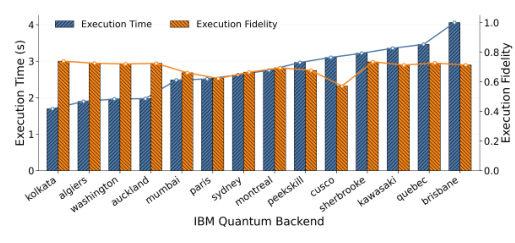
<figcaption class="paper-figure-caption"><b>Fig 1.</b> Fig. 1. Average execution time and execution fidelity across selected IBM Quantum simulated backends for the evaluated circuits with varying depths.</figcaption>
</figure>
<figure class="paper-figure-card">
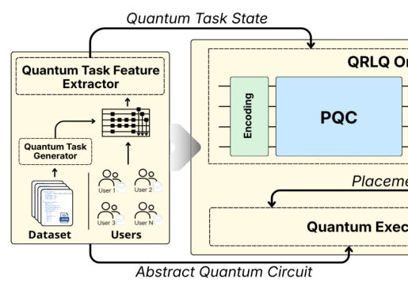
<figcaption class="paper-figure-caption"><b>Fig 2.</b> Fig. 2. System-level workflow of the proposed QRLQ framework for cost-delay-aware resource orchestration.</figcaption>
</figure>
<figure class="paper-figure-card">

<figcaption class="paper-figure-caption"><b>Fig 3.</b> Fig. 2 illustrates the system-level workflow of the proposed QRLQ framework within a heterogeneous QaaS environment. The architecture consists of a centralised broker managed by the QRLQ orchestrator and a set of heterogeneous quantum nodes (QNodes) to process user-submitted quantum tasks (QTasks). Each QTask includes an abstract circuit with specific technical characteristics. Initially, a feature extractor processes this circuit to extract key task features. By evaluating these task features alongside the dynamic QNode states, the QRLQ core allocates each QTask to the QNode with the highest estimated action value. Then, the circuit is passed to the preparation stage before execution on...</figcaption>
</figure>
<figure class="paper-figure-card">

<figcaption class="paper-figure-caption"><b>Fig 4.</b> Fig. 3. Example of quantum circuit transpilation and its DAG representation for execution time and execution fidelity estimation.</figcaption>
</figure>
<figure class="paper-figure-card">

<figcaption class="paper-figure-caption"><b>Fig 5.</b> Figure 3 illustrates the processing of a QTask by quantum computing resources and the associated circuit compilation process. The abstract circuit, shown in the left panel, must be compiled and mapped to the physical qubit topology of the target quantum hardware, such as the ibm_sydney system depicted in the centre panel. This procedure produces a transpiled circuit, represented as a DAG in the right panel. Notably, the DAG of the transpiled circuit enables execution time estimation via the critical path using operation times Tj, and supports fidelity evaluation through error probabilities Ej.</figcaption>
</figure>
</div>
<p><strong>Summary.</strong> This paper introduces QRLQ, a quantum reinforcement learning framework designed to optimally schedule quantum tasks across heterogeneous quantum cloud resources. By integrating Parameterized Quantum Circuits with a D3QN, QRLQ effectively manages the critical trade-off between minimizing execution cost and reducing overall system delay. The results demonstrate that QRLQ offers superior performance compared to existing heuristics while being significantly more parameter-efficient than classical deep RL methods.</p>
<p><strong>Why it may be interesting.</strong> While focused on cloud orchestration, the use of PQCs as compact function approximators for complex resource management decisions is a key topic at the intersection of quantum machine learning and quantum networking.</p>
<details>
<summary>Detailed structure</summary>
<p><strong>Main problem.</strong> The paper addresses the complex task of orchestrating quantum cloud computing resources (QaaS) by jointly minimizing execution costs and system delays.</p>
<p><strong>Main result.</strong> The proposed QRLQ framework significantly outperforms heuristic baselines by achieving lower mean cost and substantial reductions in mean delay while maintaining high execution fidelity.</p>
<p><strong>Method.</strong> It proposes QRLQ, a novel framework that integrates Parameterized Quantum Circuits (PQCs) with a Dueling Double Deep Q-Network (D3QN) for decision-making.</p>
<p><strong>Model / system.</strong> The system models a heterogeneous quantum cloud environment composed of multiple Quantum Processing Units (QPUs) accessed via a QaaS model. The problem is formulated as an online sequential decision process (MDP).</p>
<p><strong>Key observables.</strong> Mean Cost, Mean Delay, Execution Fidelity, Execution Time, and Waiting Time.</p>
<p><strong>Important parameters / regimes.</strong> Qubit count, quantum volume, gate error rates, and the weighting factors ($\eta$) used in the scheduling score calculation.</p>
<p><strong>Assumptions / limitations.</strong> The work assumes a uniform time-based pricing model and is motivated by the constraints of the NISQ era, though it aims for future fault-tolerant environments.</p>
<p><strong>Figures summary.</strong> Figures illustrate the system workflow (Fig. 2) and compare average execution time and waiting time across various scheduling policies (Fig. 6a-d).</p>
<p><strong>Paper structure.</strong> The paper introduces the problem setup, details the QRLQ methodology integrating PQCs into D3QN, presents the cost/delay objective function, and validates the approach through extensive simulations comparing QRLQ against multiple heuristic and classical DRL baselines.</p>
</details>
<details>
<summary>Abstract</summary>
<p>Quantum cloud computing, delivered through the quantum-as-a-service (QaaS) model, provides access to quantum computing resources. However, applying uniform time-based pricing across fundamentally heterogeneous quantum resources significantly complicates task orchestration, particularly when addressing the tradeoff between execution costs and system performance. While heuristic methods rely on predefined scheduling rules, classical deep reinforcement learning (DRL) models may require more trainable parameters in this setting. Motivated by the potential of parameterised quantum circuits (PQCs) as compact function approximators, we propose QRLQ, a cost-delay-aware quantum cloud scheduling framework integrating PQCs with a dueling double deep Q-network (D3QN) to dynamically account for both cost and delay. Our simulation results show that QRLQ achieves lower mean cost and delay than the heuristic baselines, achieving a 5-11% lower mean cost relative to availability-based and rotation-based heuristics and reducing mean delay by 17% and 82% relative to the strongest and weakest heuristic baselines, respectively, while retaining execution fidelity within 2% of a fidelity-greedy policy. Compared with the classical DRL baseline, QRLQ achieves comparable scheduling performance while using 72% fewer trainable parameters. This work explores the feasibility of using QRL for task orchestration in quantum cloud environments and demonstrates its potential for cost-delay-aware quantum resource management.</p>
</details>
<p><sub><a href="#top">↑ back to top</a></sub></p>

<p><a id="paper-2609.27103"></a></p>
<h3 id="quantum-enhanced-sampling-of-schrodinger-bridges"><a href="http://arxiv.org/abs/2609.27103v1">Quantum-Enhanced Sampling of Schrödinger Bridges</a></h3>
<p><strong>Authors:</strong> Tom Lollier, Eyal Neuman<br>
<strong>Type:</strong> theory · <strong>Category:</strong> quantum information and computing · <strong>PDF:</strong> <a href="https://arxiv.org/pdf/2609.27103v1">https://arxiv.org/pdf/2609.27103v1</a><br>
<strong>Analysis basis:</strong> full PDF text, analyzed in chunks</p>
<div class="figure-strip-hint">↔ Scroll figures horizontally</div>
<div class="paper-figures-scroll">
<figure class="paper-figure-card">

<figcaption class="paper-figure-caption"><b>Fig 1.</b> Figure 1: Roadmap of the sampling procedure. The dashed step samples eQ0,T using the row pro- cedure in Section 6.3, with additional work beyond computing the scaling vectors. The path-error bound assumes a successful scaling run and ideal endpoint sampling. The conditional sampler requires coherent row preparation for P and the bridge Gibbs kernel. After failure, the entire condi- tional procedure is repeated independently with the endpoints fixed, requiring a constant expected number of attempts.</figcaption>
</figure>
</div>
<p><strong>Summary.</strong> This paper presents quantum algorithms to enhance the sampling of Schrödinger bridges on finite state spaces. It achieves significant computational speedups over classical methods by utilizing quantum walks for path sampling and quantum Newton methods for coupling potentials. This work is crucial for efficiently simulating quantum processes constrained between known initial and final states.</p>
<p><strong>Why it may be interesting.</strong> The quantum speedups demonstrated for sampling complex path distributions are highly relevant for simulating open quantum systems or quantum channels where path integrals or optimal control problems are central.</p>
<details>
<summary>Detailed structure</summary>
<p><strong>Main problem.</strong> The paper addresses the challenge of efficiently sampling from the Schrödinger bridge distribution on a finite state space, which is mathematically equivalent to finding an optimal path law connecting two given marginal distributions.</p>
<p><strong>Main result.</strong> The authors develop quantum algorithms that improve the computational complexity for both conditional path sampling (from quadratic to linear dependence on time horizon $T$) and endpoint coupling calculation (from quadratic to $N^{3/2}$ dependence on state size $N$) compared to classical methods.</p>
<p><strong>Method.</strong> The core methods involve developing a quantum Gibbs sampler based on quantum walks for path sampling, and adapting a quantum box-constrained Newton method for computing the necessary Schrödinger potentials.</p>
<p><strong>Model / system.</strong> The model is the Schrödinger bridge problem defined on a finite state space, requiring the estimation of the optimal path law $Q^*$ that minimizes the relative entropy between the path law and the reference Markov process $P$.</p>
<p><strong>Key observables.</strong> Total variation error ($\epsilon$), spectral gap ($\delta$), and the complexity scaling with time horizon ($T$) and state-space size ($N$).</p>
<p><strong>Important parameters / regimes.</strong> Time horizon $T$, state-space size $N$, and the required accuracy $\epsilon$ or $\epsilon_s$.</p>
<p><strong>Assumptions / limitations.</strong> The analysis relies on the existence of positive transition probabilities and assumes coherent input access for the quantum algorithms.</p>
<p><strong>Figures summary.</strong> Figure 1 provides a roadmap summarizing the entire sampling procedure, detailing the components for endpoint coupling and Markov bridge sampling.</p>
<p><strong>Paper structure.</strong> The paper is structured around decomposing the problem into endpoint coupling and conditional path sampling. It then details the quantum enhancements for each part, culminating in an analysis of error bounds when approximating the resulting distributions.</p>
</details>
<details>
<summary>Abstract</summary>
<p>We consider the dynamic Schrödinger bridge problem on a finite state space and exploit its Markov structure to decompose the problem into an endpoint coupling and a collection of conditional Markov bridges. To sample from the conditional bridges, we develop a quantum Gibbs sampler based on quantum walks on the bridge path space. Under uniformly positive transition probabilities, we derive a spectral-gap bound and provide an explicit procedure for preparing the initial state. Compared with the update bounds of the corresponding classical Gibbs sampler, our quantum walk-query complexity improves the dependence on the time horizon $T$ from quadratic to linear. For the endpoint coupling, we adapt a quantum box-constrained Newton method to compute the Schrödinger potentials, improving the matrix-scaling complexity, at fixed accuracy, from quadratic to $N^{3/2}$ in the state-space size $N$. Finally, we show that exponential reweighting extends both the Schrödinger bridge formulation and the Gibbs spectral-gap estimate to models with additive running costs.</p>
</details>
<p><sub><a href="#top">↑ back to top</a></sub></p>

<p><a id="paper-2609.27703"></a></p>
<h3 id="refuting-the-qaoa-fixed-angle-conjecture"><a href="http://arxiv.org/abs/2609.27703v1">Refuting the QAOA fixed-angle conjecture</a></h3>
<p><strong>Authors:</strong> Lennart Binkowski<br>
<strong>Type:</strong> theory · <strong>Category:</strong> quantum information and computing · <strong>PDF:</strong> <a href="https://arxiv.org/pdf/2609.27703v1">https://arxiv.org/pdf/2609.27703v1</a><br>
<strong>Analysis basis:</strong> full PDF text, analyzed in chunks</p>
<div class="figure-strip-hint">↔ Scroll figures horizontally</div>
<div class="paper-figures-scroll">
<figure class="paper-figure-card">

<figcaption class="paper-figure-caption"><b>Fig 1.</b> FIG. 1. The tree T p d is built from a centre edge ij (red) by including every vertex within graph distance p of i or j in a d-regular graph G of girth ≥2(p +1). Edges and vertices are shaded by their graph distance to the centre edge, from saturated blue at distance 1, i.e., T 1 d , to faded grey at distance 3; the latter lie outside T 2 d , and the dashed stubs indicate that G extends even further. Shown are d = 3 on the left, and d = 4 on the right.</figcaption>
</figure>
<figure class="paper-figure-card">

<figcaption class="paper-figure-caption"><b>Fig 2.</b> FIG. 2. The complete bipartite graphs Kd,d for d = 1, 2, 3, . . . , 9; every vertex in one part is joined to every vertex in the other part, so each edge lies in (d −1)2 four-cycles. K9,9 serves as a counterexample to the fixed-angle conjecture for p = 2 on 9-regular graphs.</figcaption>
</figure>
</div>
<p><strong>Summary.</strong> This paper rigorously analyzes the fixed-angle conjecture for QAOA applied to MaxCut, a key problem in quantum optimization. It proves the conjecture holds for shallow depths or low-degree graphs, but crucially refutes it by providing a counterexample on the 9-regular graph $K_{9,9}$ at depth $p=2$. This refutation refines the theoretical understanding of when and how QAOA performance scales with graph structure.</p>
<p><strong>Why it may be interesting.</strong> This work directly impacts the theoretical understanding of quantum algorithms for combinatorial optimization, providing concrete counterexamples that challenge existing assumptions about parameter optimization in QAOA.</p>
<details>
<summary>Detailed structure</summary>
<p><strong>Main problem.</strong> The paper investigates and refutes the fixed-angle conjecture concerning the performance of the Quantum Approximate Optimization Algorithm (QAOA) for solving the MaxCut problem.</p>
<p><strong>Main result.</strong> The fixed-angle conjecture is proven false for depth-2 QAOA on 9-regular graphs, while it is confirmed to be true for depth-1 on any regular graph and for all depths on 2-regular graphs.</p>
<p><strong>Method.</strong> The analysis uses theoretical bounds derived from the structure of the QAOA expectation value, comparing performance on general graphs to optimized tree structures, and employs advanced techniques like symmetry-adapted bases and tensor product factorization.</p>
<p><strong>Model / system.</strong> The model is the QAOA applied to the MaxCut problem, formulated using an Ising encoding Hamiltonian $H_f$ on $d$-regular graphs, particularly focusing on complete bipartite graphs $K_{d,d}$.</p>
<p><strong>Key observables.</strong> The approximation ratio $C(eta, \gamma) = F(eta, \gamma) / C_{\max}$, and the difference $\delta_e$ between the tree-optimal objective value and the edge expectation value.</p>
<p><strong>Important parameters / regimes.</strong> QAOA depth ($p$), graph regularity ($d$), and the graph structure (e.g., $K_{9,9}$ for the counterexample).</p>
<p><strong>Assumptions / limitations.</strong> The analysis relies on the locality property of QAOA, which restricts correlations to a distance $p$ on the graph.</p>
<p><strong>Figures summary.</strong> Figure 1 illustrates the tree structure $T_{p}^d$ used for comparison. Figure 2 shows complete bipartite graphs $K_{d,d}$ up to $d=9$, highlighting $K_{9,9}$ as the counterexample for $p=2$.</p>
<p><strong>Paper structure.</strong> The paper first establishes the context of the conjecture, then proves its validity for specific cases ($p=1$ and $d \le 2$), and finally presents a rigorous counterexample for $p=2$ on $K_{9,9}$ by analyzing the expectation values in a symmetry-adapted basis.</p>
</details>
<details>
<summary>Abstract</summary>
<p>The fixed-angle conjecture for the quantum approximate optimisation algorithm (QAOA) is shown to be false for depth-2 QAOA on 9-regular graphs, and proven to be correct for depth-1 on any regular graph, as well, as for any depth on all 2-regular graphs.</p>
</details>
<p><sub><a href="#top">↑ back to top</a></sub></p>

<p><a id="paper-2609.27721"></a></p>
<h3 id="resonantly-enhanced-multiphonon-scattering-and-local-orbital-phonon-coupling-in-bulk-and-thin-flakes-of-2d-single-crystals-of-antiferromagnetic-nixfe1-x2p2s6"><a href="http://arxiv.org/abs/2609.27721v1">Resonantly Enhanced Multiphonon Scattering and Local Orbital-Phonon Coupling in Bulk and Thin Flakes of 2D Single Crystals of Antiferromagnetic (NixFe1-x)2P2S6</a></h3>
<p><strong>Authors:</strong> Nasaru Khan, Miłosz Rybak, Yuliia Shemerliuk, Sebastian Selter, Bernd Büchner, Saicharan Aswartham, Krzysztof Wohlfeld, Pradeep Kumar<br>
<strong>Type:</strong> experiment · <strong>Category:</strong> strongly correlated electrons · <strong>PDF:</strong> <a href="https://arxiv.org/pdf/2609.27721v1">https://arxiv.org/pdf/2609.27721v1</a><br>
<strong>Analysis basis:</strong> full PDF text, analyzed in chunks</p>
<div class="figure-strip-hint">↔ Scroll figures horizontally</div>
<div class="paper-figures-scroll">
<figure class="paper-figure-card">

<figcaption class="paper-figure-caption"><b>Fig 1.</b> Figure 1. (a) Top-view illustration of the antiferromagnetic arrangement in Ni₂P₂S₆. Yellow,</figcaption>
</figure>
<figure class="paper-figure-card">

<figcaption class="paper-figure-caption"><b>Fig 2.</b> Figure 2. Raw Raman spectra measured at 4 K using a 633 nm excitation laser across the</figcaption>
</figure>
<figure class="paper-figure-card">

<figcaption class="paper-figure-caption"><b>Fig 3.</b> Figure 3. Fitted Raman spectra recorded at 4 K using a 633 nm excitation laser in the spectral</figcaption>
</figure>
<figure class="paper-figure-card">

<figcaption class="paper-figure-caption"><b>Fig 4.</b> Figure 4. Temperature-dependent evolution of peak frequency and FWHM for Raman modes</figcaption>
</figure>
<figure class="paper-figure-card">

<figcaption class="paper-figure-caption"><b>Fig 5.</b> Figure 5. Variation of the intensity ratios I₁₆/I₆ (P16 to P6), I₂₁/I₆ (P21 to P6), and I₂₁/I₉ (P21 to</figcaption>
</figure>
</div>
<p><strong>Summary.</strong> This work uses Raman spectroscopy to study 2D antiferromagnetic materials, finding that high-frequency scattering is not due to simple phonon overtones. Instead, the intensity is resonantly enhanced by localized Ni 3d electronic excitations, confirming the crucial role of local orbital-phonon coupling in these correlated magnets.</p>
<p><strong>Why it may be interesting.</strong> The strong coupling between electronic excitations (Ni 3d orbitals) and lattice vibrations (phonons) provides a concrete, measurable example of strong electron-phonon coupling in a correlated magnetic system, relevant to understanding charge transfer and orbital ordering.</p>
<details>
<summary>Detailed structure</summary>
<p><strong>Main problem.</strong> To determine the microscopic origin of anomalously strong, high-frequency Raman scattering in 2D van der Waals antiferromagnetic materials, focusing on the interplay between local orbital excitations and lattice vibrations.</p>
<p><strong>Main result.</strong> The high-frequency scattering is attributed to resonantly enhanced multiphonon scattering mediated by localized Ni 3d8 multiplet excitations, which is distinct from standard phonon overtones.</p>
<p><strong>Method.</strong> Temperature and thickness-dependent Raman spectroscopy, complemented by theoretical cluster calculations and Franck-Condon modeling.</p>
<p><strong>Model / system.</strong> The study investigates 2D single crystals of antiferromagnetic (Ni_xFe_{1-x})2P2S6, comparing the charge-transfer character of Ni2P2S6 with the Mott-Hubbard insulator regime of Fe2P2S6.</p>
<p><strong>Key observables.</strong> Anomalously high and weakly temperature-dependent intensity ratio of higher-order modes relative to low-energy first-order phonons; specific phonon clusters around 800 cm-1 and 1170 cm-1.</p>
<p><strong>Important parameters / regimes.</strong> Temperature (4 K to 300 K); crystal thickness (down to 10 nm); doping concentration (x in Ni_xFe_{1-x}).</p>
<p><strong>Assumptions / limitations.</strong> The anomalous scattering behavior suggests resonance phenomena involving localized Ni 3d8 multiplets, rather than simple harmonic overtones.</p>
<p><strong>Figures summary.</strong> Figures illustrate raw and fitted Raman spectra for varying flake thicknesses, showing specific peak clusters; temperature dependence plots track mode softening and anomalies near the AFM transition.</p>
<p><strong>Paper structure.</strong> The paper systematically analyzes Raman spectra across varying thicknesses and compositions, contrasting the observed high-order features in Ni-containing compounds against the background of established phonon modes and theoretical expectations.</p>
</details>
<details>
<summary>Abstract</summary>
<p>Orbital degrees of freedom play a pivotal role in shaping the physical properties of two-dimensional (2D) van der Waals magnetic systems, strongly influencing electron-phonon coupling and intermediate-state dynamics. In this study, we present a comprehensive temperature and thickness-dependent Raman investigation of the single crystals of 2D van der Waals antiferromagnetic series (NixFe1-x)2P2S6. Utilizing Raman spectroscopy, we explore the interplay between local orbital excitations and lattice vibrations, observing higher-order phonon modes extending up to the fourth order. We observe an anomalously high and weakly temperature-dependent intensity ratio of these higher-order modes relative to low-energy first-order phonons. Theoretical cluster calculations and Franck-Condon modelling reveal that these features originate from resonantly enhanced multiphonon scattering mediated by localized intermediate Ni 3d8 multiplet excitations. The local orbital occupancy of these intermediate states couples strongly to lattice coordinates, providing a selective enhancement mechanism for specific phonon channels. Notably, these higher-order features are absent in the end-member Fe2P2S6. This distinction reflects the charge-transfer character of Ni2P2S6, which places optical transitions in resonance with local multiplet states, contrasted with the Mott-Hubbard insulator regime in Fe-rich analogues. Our findings clarify the microscopic origin of high-frequency Raman scattering in transition metal thiophosphates and underscore the central role of local orbital-phonon interactions in 2D correlated magnets.</p>
</details>
<p><sub><a href="#top">↑ back to top</a></sub></p>

<p><a id="paper-2609.28367"></a></p>
<h3 id="the-minimal-dimension-of-entangled-noise-advantage"><a href="http://arxiv.org/abs/2609.28367v1">The Minimal Dimension of Entangled-Noise Advantage</a></h3>
<p><strong>Authors:</strong> Xiao-Ke Wang, Zi-Yuan Liu, Ming-Yang Li, Shengjun Wu, Zeng-Bing Chen<br>
<strong>Type:</strong> theory · <strong>Category:</strong> quantum information and computing · <strong>PDF:</strong> <a href="https://arxiv.org/pdf/2609.28367v1">https://arxiv.org/pdf/2609.28367v1</a><br>
<strong>Analysis basis:</strong> full PDF text, analyzed in chunks</p>
<div class="figure-strip-hint">↔ Scroll figures horizontally</div>
<div class="paper-figures-scroll">
<figure class="paper-figure-card">

<figcaption class="paper-figure-caption"><b>Fig 1.</b> Low-resolution page preview, page 2</figcaption>
</figure>
<figure class="paper-figure-card">

<figcaption class="paper-figure-caption"><b>Fig 2.</b> Low-resolution page preview, page 3</figcaption>
</figure>
<figure class="paper-figure-card">

<figcaption class="paper-figure-caption"><b>Fig 3.</b> Low-resolution page preview, page 4</figcaption>
</figure>
<figure class="paper-figure-card">

<figcaption class="paper-figure-caption"><b>Fig 4.</b> Low-resolution page preview, page 5</figcaption>
</figure>
<figure class="paper-figure-card">

<figcaption class="paper-figure-caption"><b>Fig 5.</b> Low-resolution page preview, page 6</figcaption>
</figure>
</div>
<p><strong>Summary.</strong> This theoretical paper investigates the difference between two measures of entanglement robustness: standard (separable noise) and generalized (any noise). It proves that for two-qubit systems, these two measures are always equal, but demonstrates a strict inequality for the qubit-qutrit system. This work provides a comprehensive classification of when entangled noise offers a quantifiable advantage over separable noise in finite quantum systems.</p>
<p><strong>Why it may be interesting.</strong> It provides a rigorous, quantitative classification of when entanglement resources are equally protected against different types of noise, which is fundamental for understanding noise resilience in quantum communication protocols.</p>
<details>
<summary>Detailed structure</summary>
<p><strong>Main problem.</strong> The paper compares two measures of entanglement robustness—standard ($R_s$) and generalized ($R_g$)—to determine if entangled noise can erase entanglement more efficiently than separable noise.</p>
<p><strong>Main result.</strong> The equality $R_s(
ho) = R_g(
ho)$ holds only for two-qubit states in bipartite systems, but a strict gap is found for the qubit-qutrit system, indicating an advantage for entangled noise.</p>
<p><strong>Method.</strong> The analysis uses semidefinite programming (SDP) formulations, optimization over noise operators, and geometric arguments involving product-vector spaces to classify the equality boundaries.</p>
<p><strong>Model / system.</strong> The study focuses on bipartite quantum states ($\mathcal{C}^m \otimes \mathcal{C}^n$) and general finite multipartite systems, analyzing robustness relative to full separability.</p>
<p><strong>Key observables.</strong> The two robustness measures, $R_s(
ho)$ and $R_g(
ho)$, and the gap $R_s(
ho) - R_g(
ho)$.</p>
<p><strong>Important parameters / regimes.</strong> The dimensions of the subsystems ($m, n$) and the number of parties ($N$) in the multipartite setting.</p>
<p><strong>Assumptions / limitations.</strong> The analysis assumes the PPT criterion characterizes separability in both robustness settings, and the results are for single-copy robustness, not asymptotic tasks.</p>
<p><strong>Paper structure.</strong> The paper proceeds by first establishing the problem in bipartite systems, proving equality for $2 \otimes 2$, then constructing a counterexample for $2 \otimes 3$, and finally generalizing the classification to arbitrary finite multipartite systems.</p>
</details>
<details>
<summary>Abstract</summary>
<p>Can entangled noise erase entanglement more efficiently than separable noise? Standard robustness restricts the added noise to separable states; generalized robustness allows any state. We prove that the two costs coincide for every two-qubit state and give an explicit full-rank qubit--qutrit state with a strict gap. Positivity under partial transpose (PPT) characterizes separability in both dimensions, so the boundary is not caused by a failure of the PPT criterion. Instead, product-vector geometry permits a rank-one bridge between the two-qubit dual optimizations and supplies a two-dimensional completely entangled subspace for the qubit--qutrit separation. Local isometric embeddings complete the finite-dimensional bipartite classification, also for any fixed multipartite cut. Combined with known three-qubit separation, the result classifies universal equality relative to full separability in all finite multipartite systems.</p>
</details>
<p><sub><a href="#top">↑ back to top</a></sub></p>
</details>
<h2 id="secondary-cond-mat-archives">Secondary cond-mat archives</h2>
<p><em>Papers from cond-mat.mtrl-sci, mes-hall, other, soft, supr-con. These archives are de-prioritized — they appear at the end regardless of relevance score.</em></p>
<h3 id="relevant-in-secondary-archives-21">Relevant in secondary archives (21)</h3>

<p><a id="paper-2609.28025"></a></p>
<h3 id="nonabelian-vortices-from-topological-strings-to-nonvolatile-memory">⭐ <a href="http://arxiv.org/abs/2609.28025v1">Nonabelian vortices: From topological strings to nonvolatile memory</a></h3>
<p><strong>Highlighted author(s):</strong> Yaroslav Tserkovnyak<br>
<strong>Authors:</strong> Chau Dao, Eric Kleinherbers, Yaroslav Tserkovnyak<br>
<strong>Type:</strong> theory · <strong>Category:</strong> other · <strong>PDF:</strong> <a href="https://arxiv.org/pdf/2609.28025v1">https://arxiv.org/pdf/2609.28025v1</a><br>
<strong>Analysis basis:</strong> full PDF text, analyzed in chunks
<strong>Topic relevance:</strong> <code>analog quantum simulation</code> <strong>3/5</strong></p>
<div class="figure-strip-hint">↔ Scroll figures horizontally</div>
<div class="paper-figures-scroll">
<figure class="paper-figure-card">

<figcaption class="paper-figure-caption"><b>Fig 1.</b> FIG. 1. Illustration of the soup of vortex-antivortex pairs with a legend labeling the elementary vortex-antivortex pairs on top of the ground state (gray). The red, green, and blue circles inscribed with plus and minus signs denote singular vortex cores with relative winding numbers n01 = ±1, n12 = ±1, and n20 = ±1, respectively. The light red (blue) shaded regions indicate a chirality χ = +1 (χ = −1), where the complex numbers ψ0, ψ1, and ψ2 are ordered counterclockwise (clockwise) in the complex plane. Solid red and blue strings connecting the vortex cores correspond to excited collinear configurations with chirality χ = 0, where ψ1 and ψ2 are located in the center, respectively. At the...</figcaption>
</figure>
<figure class="paper-figure-card">

<figcaption class="paper-figure-caption"><b>Fig 2.</b> FIG. 2. (a) Unit cell of order parameter space, (b) extended order parameter space projected to the plane orthogonal to the (1, 1, 1) direction, and (c) texture of ψ0 (gray), ψ1 (red) and ψ2 (blue) on a loop ∂A with 0 ≤ℓ&lt; L encircling a [b, a] vortex. In (a)-(b), we plot along the high symmetry directions by introducing the coordinates u = θ01 −2θ12 + θ20, v = √</figcaption>
</figure>
<figure class="paper-figure-card">

<figcaption class="paper-figure-caption"><b>Fig 3.</b> FIG. 3. (a) Memory storage concept and (b) schematic of weak links facilitating vortex nucleation. The Mexican hat potentials show how α1 and α2 must be tuned to select for [a] and [b] vortices. The green arrows represent the external drive f, which nucleates the vortex-antivortex pairs at the weak links (red and blue zigzags) in (b) and transports the vortices from Cw to Cd via the Magnus force in (a).</figcaption>
</figure>
</div>

<p><strong>Summary.</strong> This theoretical work analyzes nonabelian vortices in a two-component condensate, showing that their topology is richer than previously assumed. By utilizing the mathematical structure of the pure braid group, the authors predict the existence of novel defects and propose a physical realization of a nonvolatile memory device that encodes information robustly in the vortex texture.</p>
<p><strong>Why it may be interesting.</strong> The connection between topological defects in condensed matter systems (like vortices in superfluids or superconductors) and information storage mechanisms is highly relevant to quantum information science, particularly in realizing robust, non-dissipative memory elements.</p>
<details>
<summary>Detailed structure</summary>
<p><strong>Main problem.</strong> The paper investigates the topological classification and properties of nonabelian vortices arising in a two-dimensional film of a two-component condensate.</p>
<p><strong>Main result.</strong> Nonabelian vortices possess an enriched internal structure compared to abelian vortices, allowing for the storage of exponentially large amounts of topologically robust information, which is demonstrated via a nonvolatile memory concept.</p>
<p><strong>Method.</strong> The analysis uses homotopy group theory, classifying defects using the pure braid group $P_3$, and derives topological invariants like higher-order winding numbers ($Q^{(2)}$) from the geometry of the order parameter space.</p>
<p><strong>Model / system.</strong> The model is a 2D film of a two-component condensate, described by an order parameter $\Psi \in \mathbb{C}^3$. The physics is governed by a Hamiltonian including kinetic, Mexican hat potential, and repulsive interaction terms.</p>
<p><strong>Key observables.</strong> Relative winding numbers ($n_{ij}$), nonabelian vortex types ($[a], [b]$), Brunnian vortices (detected by $Q^{(2)}$), and the topological information capacity scaling with $S$.</p>
<p><strong>Important parameters / regimes.</strong> The repulsive interaction strength $U_0$, the characteristic length scale $\xi \sim \sqrt{A/U_0}$, and the number of stored strings $S$.</p>
<p><strong>Assumptions / limitations.</strong> The analysis relies on the order parameter space $C_3(\mathbb{C})$ and assumes the system can be driven to transport vortices along an engineered cylinder geometry.</p>
<p><strong>Figures summary.</strong> Figures illustrate the vortex soup structure, the unit cell projections in the order parameter space, and the schematic for the nonvolatile memory storage mechanism using red and blue strings.</p>
<p><strong>Paper structure.</strong> The paper progresses from defining the physical system and its order parameter space, to classifying vortices using homotopy groups ($P_3$), identifying higher-order defects (Brunnian vortices), and finally applying this theory to devise a nonvolatile memory storage device based on vortex transport.</p>
</details>
<details>
<summary>Abstract</summary>
<p>We investigate the topological classification and properties of nonabelian vortices that arise in a 2-dimensional film of a two-component condensate. For a repulsive interaction between the condensates, we realize an order parameter in the ordered configuration space of three complex numbers $\mathcal C_3(\mathbb C)$. Analyzing the homotopic properties, we find the emergence of elementary nonabelian vortex-antivortex pairs connected by energetic strings that are rooted in the repulsive interaction and carry the nonabelian information. Moreover, we predict the existence of Brunnian vortices, which are textures exhibiting zero net winding of the condensate phases and can only be detected by a higher-order winding number. Finally, to motivate technological applications rooted in nonabelian vortex transport, we devise a nonvolatile memory storage device that encodes topologically robust information.</p>
</details>
<p><sub><a href="#top">↑ back to top</a></sub></p>

<p><a id="paper-2609.28293"></a></p>
<h3 id="dynamic-moire-like-band-modulation-in-dirac-materials-via-multi-beam-optical-interference"><a href="http://arxiv.org/abs/2609.28293v1">Dynamic moiré-like band modulation in Dirac materials via multi-beam optical interference</a></h3>
<p><strong>Authors:</strong> Evelyn P. Sinaga, Rizky Setiawan, Herri Trilaksana, Lukas P. A. Krisna, Eddwi H. Hasdeo<br>
<strong>Type:</strong> theory · <strong>Category:</strong> other · <strong>PDF:</strong> <a href="https://arxiv.org/pdf/2609.28293v1">https://arxiv.org/pdf/2609.28293v1</a><br>
<strong>Analysis basis:</strong> full PDF text, analyzed in chunks
<strong>Topic relevance:</strong> 🔥 <code>interference shaping light</code> <strong>4/5</strong> · <code>analog quantum simulation</code> <strong>3/5</strong> · <code>Keldysh / 2PI / non-Gaussian methods</code> <strong>2/5</strong> · <code>driven-dissipative phase transition</code> <strong>2/5</strong> · <code>methods for driven-dissipative</code> <strong>2/5</strong></p>
<div class="figure-strip-hint">↔ Scroll figures horizontally</div>
<div class="paper-figures-scroll">
<figure class="paper-figure-card">

<figcaption class="paper-figure-caption"><b>Fig 1.</b> FIG. 1. (a) Illustrates the interference geometry: red arrows denote the incident plane waves, and blue arrows denote their in-plane wavevector projections, mutually separated by 120◦. (b) Resulting electric field intensity exhibiting optical trian- gular superlattice from the interference pattern in the sample plane. aM = 2πλ/3 is the lattice period, related to the inci- dent light wavelength λ.</figcaption>
</figure>
<figure class="paper-figure-card">

<figcaption class="paper-figure-caption"><b>Fig 2.</b> FIG. 2. (a) The first mini-Brillouin zone (mBZ) of the optical superlattice formed by N = 3 interfering circularly polarized beams with in-plane wavevectors q1, q2, q3 symmetrically separated by 120◦. The red directed path traces the high-symmetry trajectory κ−→γ →µ →κ+. (b, c) Valley-resolved moir´e miniband structures along the high-symmetry path for (b) valley K (τ = +1) and (c) valley K′ (τ = −1). The gray dashed lines indicate the case of V0 = 0. We used ℏvq0 = ∆, and eV0 = V0/∆= 0.2 for the solid lines. (d) Corresponding valley-resolved and total density of states (DOS) calculated over the full two-dimensional mBZ.</figcaption>
</figure>
<figure class="paper-figure-card">

<figcaption class="paper-figure-caption"><b>Fig 3.</b> FIG. 3. Valley-resolved topological phase transition under cir- cularly polarized light. (a,b) Band structures at ∆/(ℏvq0) = 1.0 for V0/∆= 0.60, representing the CK v = 1 for K valley. (c) Corresponding topological phase diagrams for the K val- ley. Black lines denote the phase boundaries, while the open circles indicate the parameter points used in panels (a) and (b).</figcaption>
</figure>
<figure class="paper-figure-card">

<figcaption class="paper-figure-caption"><b>Fig 4.</b> FIG. 5. Density of states (DOS) of optical moir´e pattern from N laser beams. N = 3 to be compared with Fig. 2(c). DOS of N = 5 and N = 7 represent the electronic structure of quasicrystals.</figcaption>
</figure>
<figure class="paper-figure-card">

<figcaption class="paper-figure-caption"><b>Fig 5.</b> FIG. 6. Creating CP light from (a,b) N = 3 and (c,d) N = 5 beams of LP light with phase delay Eq. (21). Spatial de- pendence of (a,b) electric field intensity and (c,d) degree of circular polarization (DOCP) Eq. (20).</figcaption>
</figure>
</div>

<p><strong>Summary.</strong> This paper proposes an all-optical method to engineer moiré-like band structures in Dirac materials by interfering multiple coherent laser beams. By utilizing the Floquet framework, the authors show that this technique can create tunable, valley-selective potentials, even achieving quasicrystalline order. This provides a powerful, non-mechanical route for dynamic band engineering and topological control in 2D materials.</p>
<p><strong>Why it may be interesting.</strong> This work is highly relevant to AMO physics and quantum optics as it uses structured light fields (optical interference) to engineer synthetic gauge fields and topological properties in solid-state systems, mimicking effects usually requiring strain or magnetic fields.</p>
<details>
<summary>Detailed structure</summary>
<p><strong>Main problem.</strong> The research aims to develop a purely optical method to dynamically generate moiré-like superlattices and quasicrystalline potentials in gapped Dirac materials, thereby bypassing the need for physical mechanical twisting.</p>
<p><strong>Main result.</strong> The authors demonstrate that using multi-beam interference, especially with confined surface plasmon polaritons, allows for the creation of reconfigurable, all-optical platforms capable of engineering valley-dependent topology and miniband structures.</p>
<p><strong>Method.</strong> The study employs the high-frequency Floquet framework and Magnus expansion to derive an effective time-independent Hamiltonian, which is then solved using a plane-wave basis and numerical diagonalization.</p>
<p><strong>Model / system.</strong> The system is modeled using low-energy Dirac fermions in a 2D material subjected to a time-periodic, spatially modulated effective mass potential generated by the interference of multiple coherent optical beams.</p>
<p><strong>Key observables.</strong> Valley-selective miniband reconstruction, topological phase transitions (quantized Chern numbers), and the effective valley Landé g-factor.</p>
<p><strong>Important parameters / regimes.</strong> The number of interfering beams ($N$), the optical field strength ($A_0$), the ratio of optical frequency to gap ($\hbar\omega / \Delta$), and the relative phases of the beams.</p>
<p><strong>Assumptions / limitations.</strong> The analysis relies on the high-frequency Floquet approximation and, for the plasmonic extension, assumes the ability to control relative phases to overcome the free-space diffraction limit.</p>
<p><strong>Figures summary.</strong> Figures illustrate the interference geometry for $N=3$ beams forming a triangular superlattice, and the resulting optical field intensity patterns.</p>
<p><strong>Paper structure.</strong> The paper progresses from establishing the general Floquet framework for time-periodic driving, deriving the effective Hamiltonian via the Magnus expansion, applying this to multi-beam interference to generate spatially modulated potentials, and finally analyzing the resulting band structure and topological invariants.</p>
</details>
<details>
<summary>Abstract</summary>
<p>We propose a purely optical Floquet framework to dynamically generate moiré-like superlattices and quasicrystalline potentials in a gapped Dirac material, entirely bypassing the need for physical twisting. The interference of three coherent circularly polarized beams produces a triangular, valley-dependent Floquet mass landscape that folds the Dirac spectrum into a mini-Brillouin zone, driving pronounced valley-selective miniband reconstruction. We further show that the bands near the Fermi level undergo a light-driven topological phase transition. Remarkably, interfering five or seven beams yields non-crystallographic spatial patterns, giving rise to optical quasicrystals with similar valley contrasting features. Although this purely optical approach provides a versatile route to band engineering, reaching deep subwavelength modulation requires overcoming the free-space diffraction limit. To overcome this limitation, we consider highly confined, linearly polarized surface plasmon polariton fields with controlled relative phases. Their phase-controlled interference generates a spatially alternating chiral mass with zero spatial average. Consequently, the two valleys exhibit degenerate energy spectra while hosting opposite valley-resolved miniband Chern numbers. Our findings establish a reconfigurable, all-optical platform for dynamically engineering moiré-like bands, quasicrystalline electronic states, and valley-dependent topology without mechanical twisting.</p>
</details>
<p><sub><a href="#top">↑ back to top</a></sub></p>
<hr>
<p>
<a href="index.html">← Index</a>
 · <a href="papers_05.html">← Previous</a> · <a href="papers_07.html">Next →</a>
</p>
<hr>

</body>
</html>
